GMV Маркета
1,56 млрд ₽
Партнёр — 5,12 млрд ₽
Маркет 23.4%76.6% Партнёр
Полный разбор 7 листов данных: 9 754 сообщества, 30 дней, 64 графика. Мы проверили, какую роль играет Маркет ВКонтакте — и почему Партнёр 1 забирает 92,3% заказов.
Шесть метрик, которые задают масштаб. Синий — Маркет ВКонтакте, оранжевый — Партнёр 1.
69% открытий карточки — у Маркета. Но 92,3% заказов и 76,6% GMV уходят партнёрскому маркетплейсу. Маркет — не закрытый магазин, а слой социальной коммерции: он превращает контент в интерес и распределяет спрос.
Файл VK_CaseChamp_2026_Отборочный_этап_Датасет (1).xlsx содержит 7 листов. Ноутбук читает его напрямую из рабочей папки, поэтому все расчёты воспроизводимы: достаточно запустить ячейки сверху вниз.
| Лист | Строк | Колонок | Содержание |
|---|---|---|---|
| Бизнесы | 9 754 | 28 | сообщества: тематика, тип, подписчики, контент, инструменты, заказы, GMV, реклама |
| Маркет Вконтакте — итоги | 26 | 4 | сводные метрики Маркета и Партнёра за месяц + общие метрики |
| Маркет Вконтакте — по дням | 30 | 19 | ежедневная динамика за сентябрь 2026 |
| Маркет Вконтакте — источники | 7 | 5 | открытия карточки по источникам трафика |
| Маркет Вконтакте — категории | 18 | 5 | открытия и заказы по категориям |
| Покупатели | 15 | 6 | покупатели и заказы по полу и возрасту |
| Покупатели по регионам | 89 | 5 | покупатели и заказы по регионам РФ |
Таблица
| Лист | Строк | Колонок | Числовых колонок | Текстовых колонок | Доля пропусков, % |
|---|---|---|---|---|---|
| Бизнесы | 9754 | 28 | 26 | 2 | 6.4 |
| Маркет Вконтакте — итоги | 26 | 4 | 0 | 4 | 35.6 |
| Маркет Вконтакте — по дням | 30 | 19 | 18 | 0 | 0.0 |
| Маркет Вконтакте — источники | 7 | 5 | 4 | 1 | 5.7 |
| Маркет Вконтакте — категории | 18 | 5 | 4 | 1 | 0.0 |
| Покупатели | 15 | 6 | 4 | 2 | 4.4 |
| Покупатели по регионам | 89 | 5 | 4 | 1 | 1.8 |
| Пропусков | Доля, % | |
|---|---|---|
| Средний чек, ₽ | 9463 | 97.0 |
| Медианная цена товара, ₽ | 5412 | 55.5 |
| Автор оригинального контента (оценка модели) | 2570 | 26.3 |
Таблица показывает размер и «разреженность» каждого листа. Ключевой вывод: почти все листы заполнены полностью, кроме таблицы «Бизнесы». Там пропуски не случайны, а содержательны:
Средний чек, ₽ отсутствует у 9 463 из 9 754 сообществ (97%) — потому что чек есть только у тех, кто реально получал заказы;Медианная цена товара, ₽ отсутствует у 5 412 (55%) — у части сообществ нет каталога товаров;Автор оригинального контента отсутствует у 2 570 (26%) — это оценка модели, а не факт из анкеты.Такие пропуски нельзя заполнять нулём: ноль означал бы «бесплатный товар», а не «нет данных». Поэтому в расчётах среднего чека и цены используются только непустые значения, а численность таких наблюдений указывается отдельно.
График
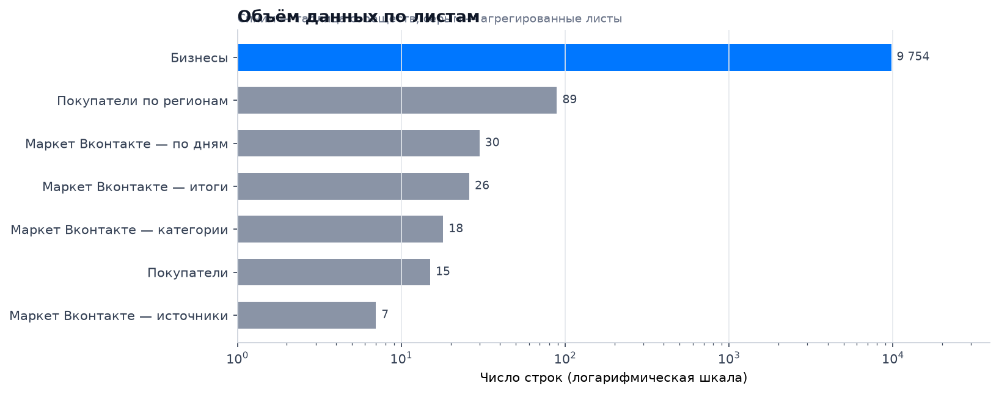
УвеличитьПо горизонтали — число строк, шкала логарифмическая, потому что разброс огромен: от 7 строк на листе «Источники» до 9 754 на листе «Бизнесы». Логарифм позволяет увидеть все листы одновременно. Вывод: основной массив данных — микроуровень сообществ; остальные листы компактные, но именно они дают макро-картину всего Маркета.
График
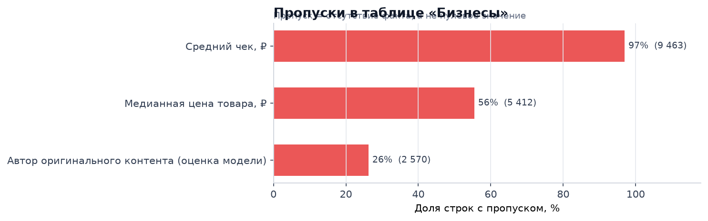
УвеличитьДлина столбца — доля сообществ, у которых поле не заполнено; в скобках — абсолютное число. Читать так: «Средний чек» отсутствует у 97% сообществ, то есть заказы через чекаут в выборке — редкое событие. Это не дефект данных, а свойство генеральной совокупности: большинство сообществ не торгуют через чекаут вообще.
Перед содержательным анализом нужно зафиксировать шесть особенностей, которые влияют на интерпретацию:
Видели товары (уник.) в сумме даёт 717 млн, а в «Итогах» за 30 дней — 66,6 млн. Это нормально: один человек учитывается каждый день. Складывать дневные уникальные нельзя, сравнивать их между днями — можно.Эти оговорки не отменяют анализ, но задают границы выводов: абсолютные уровни надёжны на уровне «Итогов», структура и доли — на уровне остальных листов.
9 754 сообщества — это выборка бизнесов, которые ВКонтакте рассматривает как продавцов или потенциальных продавцов. Здесь видно, кто они, что публикуют, какие инструменты торговли подключили и кто реально доходит до заказа.
Ниже — сводка по ключевым количественным полям. Она задаёт масштаб: типичное сообщество небольшое, контент активный, но транзакции — редкость.
Таблица
| Наблюдений | Среднее | Медиана | 75-й пц | 90-й пц | 99-й пц | Максимум | |
|---|---|---|---|---|---|---|---|
| Число подписчиков | 9,754.0 | 2,481.6 | 490.0 | 1,700.0 | 4,900.0 | 36,000.0 | 300,000.0 |
| Посты за 30 дней | 9,754.0 | 18.1 | 2.0 | 9.0 | 22.0 | 209.9 | 6,349.0 |
| Клипы за 30 дней | 9,754.0 | 2.3 | 0.0 | 1.0 | 6.0 | 30.0 | 792.0 |
| Посты с товаром за 30 дней | 9,754.0 | 1.7 | 0.0 | 0.0 | 0.0 | 3.0 | 4,400.0 |
| Клипы с товаром за 30 дней | 9,754.0 | 0.1 | 0.0 | 0.0 | 0.0 | 1.0 | 551.0 |
| Просмотры обычного контента | 9,754.0 | 32,416.2 | 1,300.0 | 5,600.0 | 24,000.0 | 500,000.0 | 29,000,000.0 |
| Просмотры товарного контента | 9,754.0 | 1,883.0 | 0.0 | 0.0 | 25.0 | 8,300.0 | 3,800,000.0 |
| Открытия карточки товара из контента | 9,754.0 | 5.4 | 0.0 | 0.0 | 0.0 | 13.0 | 10,859.0 |
| Число активных товаров в каталоге | 9,754.0 | 41.3 | 0.0 | 8.0 | 43.0 | 674.5 | 16,766.0 |
| Заказы через чекаут | 9,754.0 | 0.4 | 0.0 | 0.0 | 0.0 | 4.0 | 543.0 |
| GMV через чекаут, ₽ | 9,754.0 | 1,022.5 | 0.0 | 0.0 | 0.0 | 13,313.2 | 635,250.0 |
| Средний чек, ₽ | 291.0 | 6,461.3 | 2,231.0 | 4,316.5 | 10,064.0 | 88,039.3 | 211,758.0 |
| Траты на рекламу всего, ₽ | 9,754.0 | 9,469.3 | 0.0 | 0.0 | 0.0 | 180,000.0 | 17,000,000.0 |
| Медианная цена товара, ₽ | 4,342.0 | 14,908.1 | 1,908.0 | 4,823.0 | 16,424.7 | 369,086.7 | 1,060,000.0 |
Строки — метрики, столбцы — квантили распределения. Сравнение среднего и медианы показывает асимметрию: у подписчиков среднее сильно выше медианы (490), значит есть небольшое число очень крупных сообществ, которые тянут среднее вверх. Процентили 90 и 99 показывают «хвост»: 1% сообществ концентрирует основную аудиторию и выручку. Для транзакционных полей медиана равна нулю — типичный бизнес в выборке не получал заказов.
График
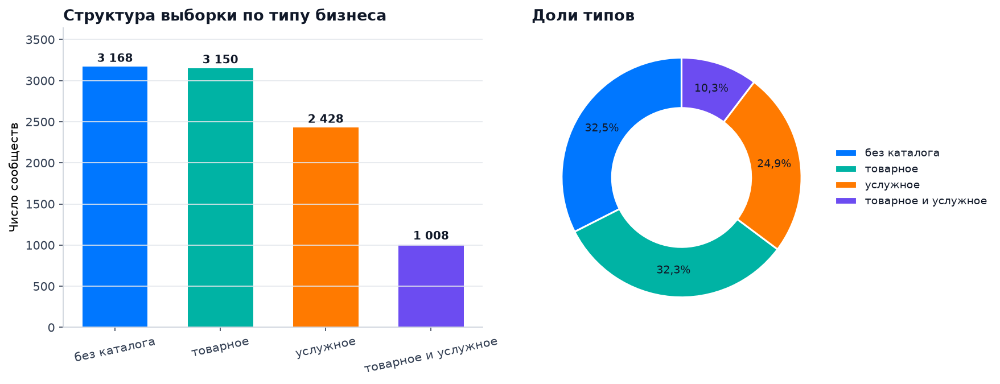
УвеличитьСлева — абсолютное число сообществ, справа — кольцевая диаграмма долей. Четыре типа: «без каталога» (3 168; 32,5%), «товарное» (3 150; 32,3%), «услужное» (2 428; 24,9%), «товарное и услужное» (1 008; 10,3%). Главное: треть выборки вообще не имеет каталога, то есть это потенциальные, а не действующие продавцы. Ещё треть — чистые товарные бизнесы, ядро торговли.
График и таблица
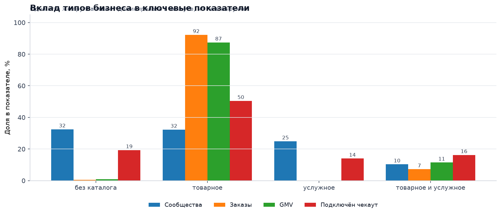
Увеличить| Сообществ | Заказы | GMV_млн | Чекаут | Активные_товары | |
|---|---|---|---|---|---|
| Тип бизнеса (товары / услуги) | |||||
| без каталога | 3168 | 16 | 0.09 | 1109 | 31 |
| товарное | 3150 | 3207 | 8.72 | 2895 | 354032 |
| услужное | 2428 | 4 | 0.01 | 802 | 0 |
| товарное и услужное | 1008 | 251 | 1.14 | 931 | 49184 |
Столбцы — четыре типа бизнеса, серии — их доля в общем числе сообществ, заказах, GMV и подключённом чекауте. Ключевое расхождение: «товарное» — это 32% сообществ, но 92% заказов и 87% GMV, тогда как «без каталога» — 32% сообществ и лишь 0,5% заказов. «Услужное» почти не торгует через чекаут: 4 заказа на 2 428 сообществ. Вывод: наличие каталога — водораздел между «аудиторией» и «магазином». Чекаут при этом подключён у 1 109 сообществ без каталога — это «спящий» инструмент без товара.
График
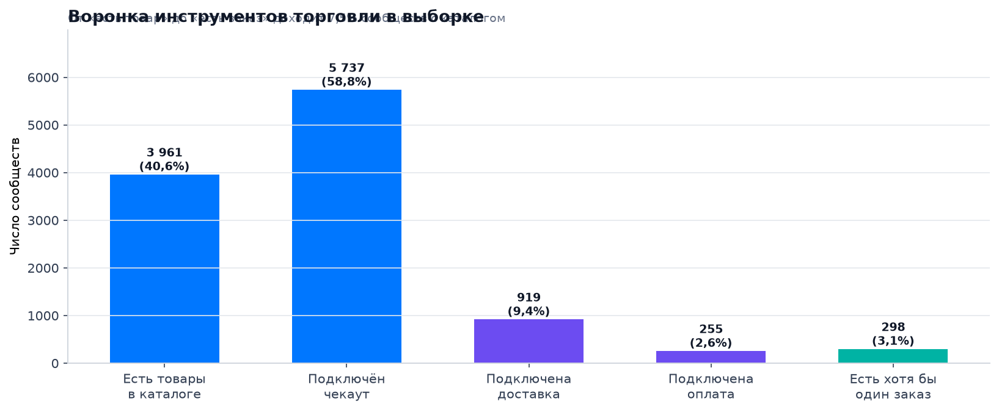
УвеличитьВысота столбца — число сообществ, подписи — абсолют и доля от всех 9 754. Логика воронки: товар → чекаут → доставка → оплата → заказ. Видно резкое сужение на каждом шаге: каталог с активными товарами есть у 3 961 (40,6%), чекаут — у 5 737 (58,8%, причём часть без товара), доставка — у 919 (9,4%), оплата — у 255 (2,6%), заказы — у 298 (3,1%). Только 7,5% сообществ с каталогом дошли до заказа. Узкое место — не подключение чекаута, а наличие товара, трафика и спроса.
График
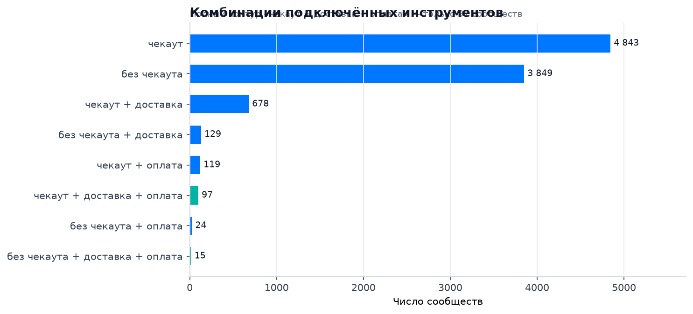
УвеличитьКаждая строка — уникальный набор подключённых опций, длина — число сообществ. Серые — без чекаута, синие — только чекаут, бирюзовый — полный контур. Читается так: 3 849 сообществ не подключили ничего, 4 843 — только чекаут без доставки и оплаты. Полный контур «чекаут + доставка + оплата» есть у 97 сообществ (1%). Значит, инфраструктура торговли в выборке фрагментарна: чаще всего продавец берёт на себя логистику и приём оплаты вне платформы.
График
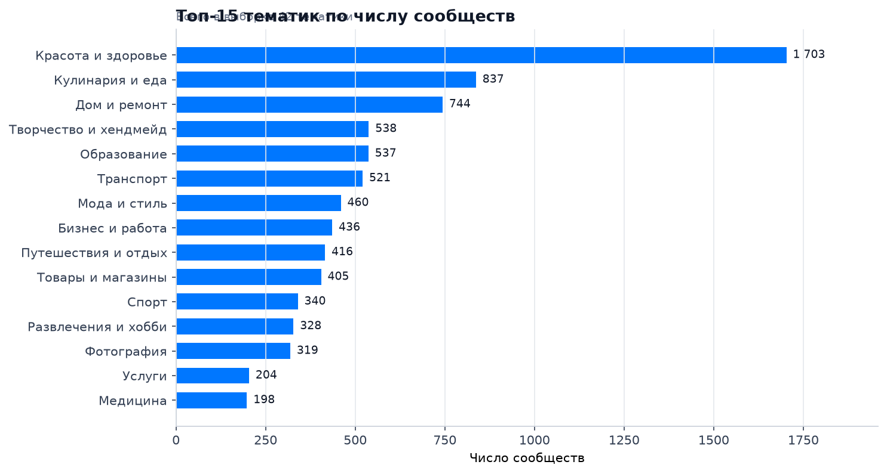
УвеличитьГоризонтальные столбцы упорядочены по убыванию; подписи — число сообществ. Лидируют «Красота и здоровье» (1 703; 17,5%), «Кулинария и еда» (837; 8,6%) и «Дом и ремонт» (744; 7,6%). Топ-3 дают 33,7% выборки, топ-10 — 67,6%. Это типичный профиль малого бизнеса в соцсети: услуги красоты, еда, домашние товары и хендмейд. Промышленного или крупного ритейла в выборке почти нет.
График
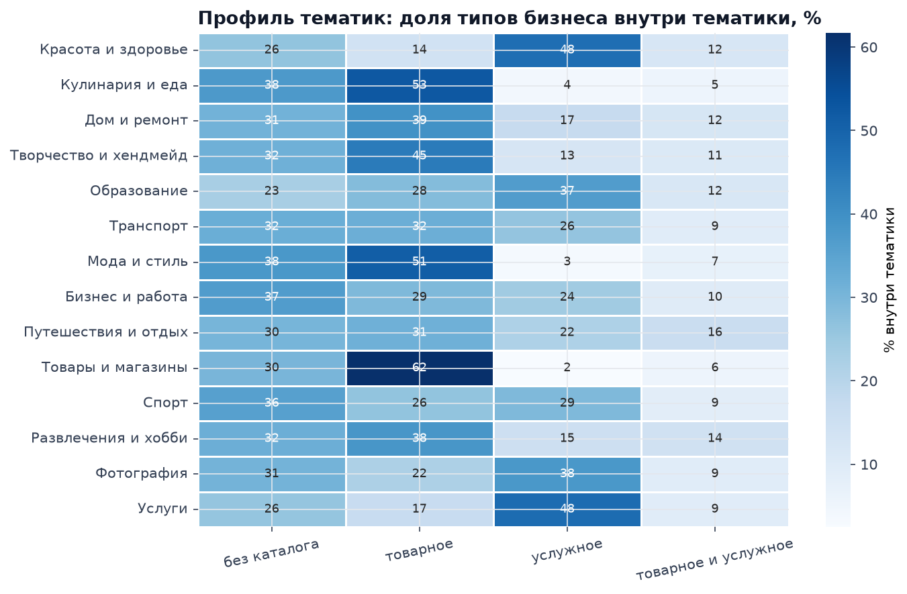
УвеличитьСтрока — тематика, столбец — тип бизнеса, цвет и число — доля типа внутри данной тематики (сумма по строке = 100%). Читать построчно. «Кулинария и еда» — 53% товарные, «Мода и стиль» — 51% товарные, «Красота и здоровье» — 48% услугные, «Образование» — 37% услугные. Тематика предсказывает модель монетизации: товарные ниши идут в каталог и чекаут, услужные — в запись и оплату вне платформы. Это объясняет, почему при большой доле услуг в выборке так мало заказов через чекаут.
График
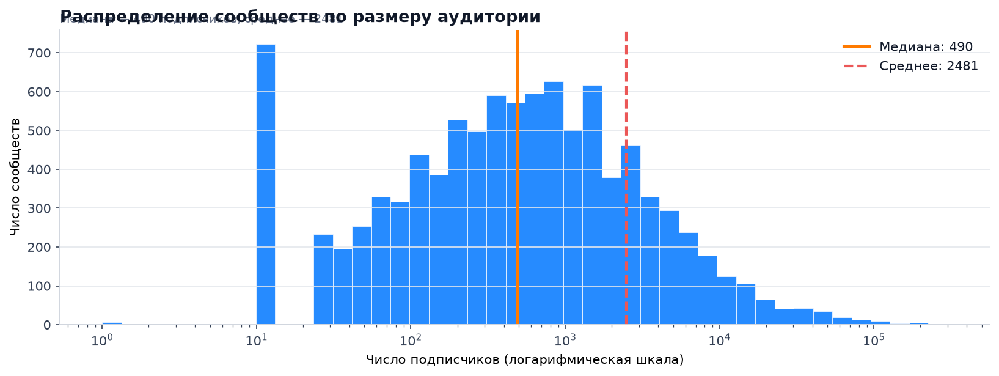
УвеличитьПо оси X — размер аудитории в логарифмическом масштабе, по Y — число сообществ. Распределение сильно правостороннее: медиана 490 подписчиков, среднее около 2 400, максимум 300 000. Красная пунктирная линия (среднее) правее медианы — признак выбросов. Основная масса — микросообщества до 5 тыс. подписчиков. Практический вывод: Маркет ВКонтакте в этой выборке — инструмент для малого бизнеса, а не для крупных брендов; решения должны быть mass-market, а не enterprise.
График
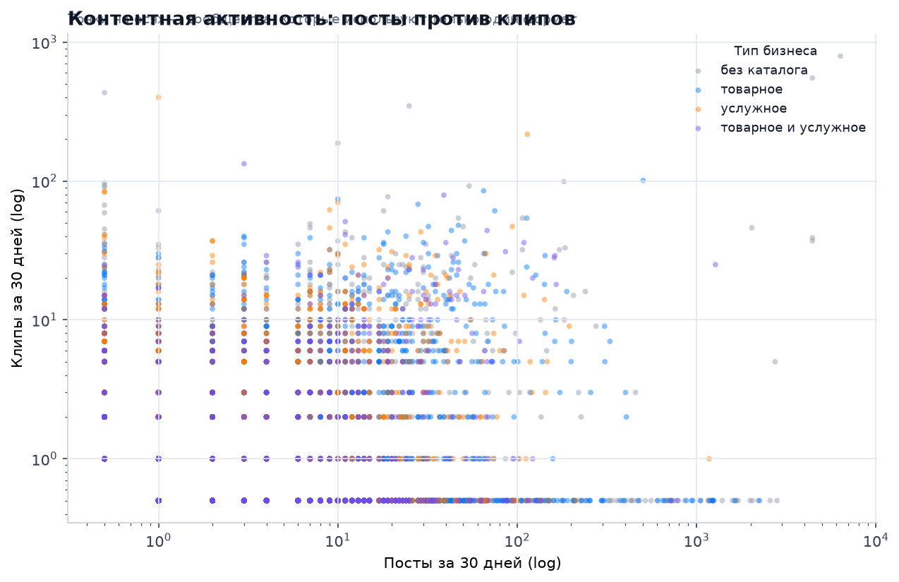
УвеличитьКаждая точка — сообщество. Обе оси логарифмические, потому что активность различается в сотни раз. Точки на нижней оси — только посты, на левой — только клипы. Видно, что посты распространены шире: медиана 2 поста против 0 клипов за месяц. Четверть сообществ (2 373; 24,3%) не публикует ничего. Клипы концентрируются у активных товарных сообществ — это более трудоёмкий формат. Вывод: клипы — не массовая практика, а инструмент продвинутой части выборки.
График
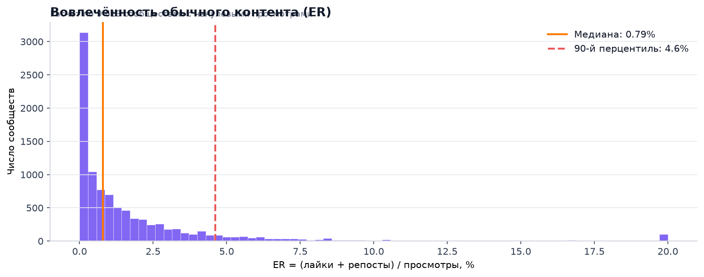
УвеличитьПо оси X — вовлечённость в процентах (лайки и репосты к просмотрам), по Y — число сообществ; значения выше 20% отсечены, чтобы не растягивать шкалу. Медиана — около 0,8%, 90-й перцентиль — 4,6%. То есть у типичного сообщества лайкает меньше одного человека из ста. Это нормальная картина для товарного контента: он выполняет функцию витрины, а не развлечения. Сравнивать ER между тематиками нужно осторожно — у развлекательного контента он структурно выше.
График
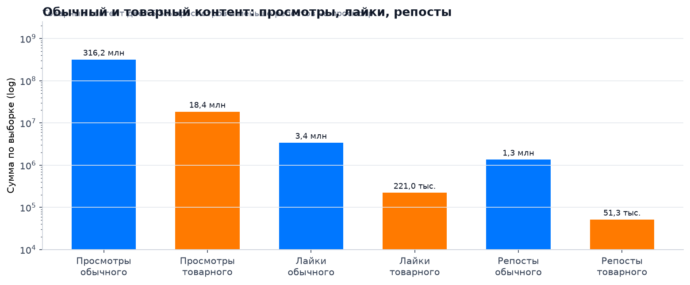
УвеличитьШесть столбцов: три метрики для обычного контента (синие) и три для товарного (оранжевые). Шкала логарифмическая из-за разницы в порядки. Товарный контент собирает 18,4 млн просмотров против 316,2 млн у обычного — всего 5,5%. При этом на 1 000 просмотров товарного контента приходится 2,8 репоста против 4,3 у обычного, то есть в 1,5 раза меньше: товарный контент не вируснее обычного, он просто уже встроен в воронку и ведёт в карточку.
График
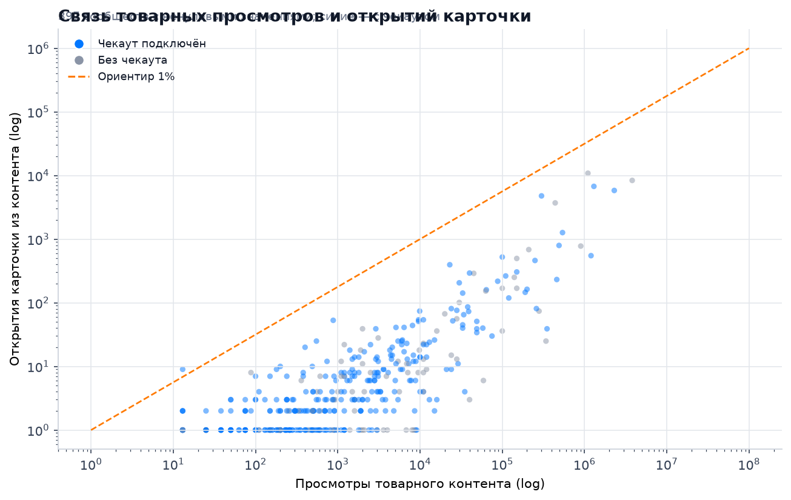
УвеличитьОси логарифмические, точка — сообщество; синие подключили чекаут, серые нет; пунктир — ориентир «1% просмотров переходит в открытие карточки». Облако вытянуто вдоль диагонали: чем больше просмотров товарного контента, тем больше открытий, но разброс огромен — при одинаковых просмотрах открытия различаются в десятки раз. Медианная конверсия — около 0,4%. Это значит, что просмотр сам по себе не продаёт: решают креатив, цена и понятность карточки.
График
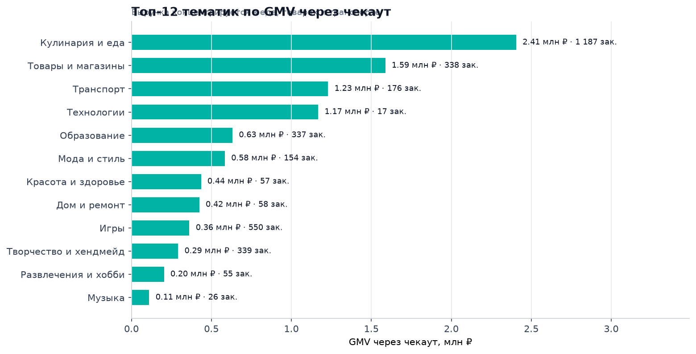
УвеличитьДлина столбца — суммарный GMV через чекаут в млн ₽, подпись — GMV и число заказов. Лидеры: «Кулинария и еда» (2,41 млн ₽; 1 187 заказов), «Товары и магазины» (1,59 млн ₽; 338), «Транспорт» (1,23 млн ₽; 176). Обратите внимание на «Технологии»: 1,17 млн ₽ всего на 17 заказов — высокий чек. Топ-3 дают 52,4% GMV выборки. Сравнение с топом по числу сообществ («Красота и здоровье» — 1 703 сообщества, но лишь 0,44 млн ₽) показывает разрыв между размером аудитории и выручкой.
График
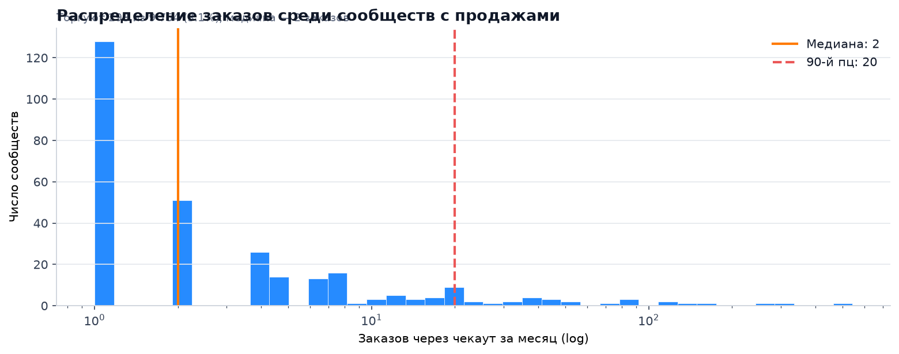
УвеличитьОсь X — заказы за месяц в лог-масштабе, ось Y — число сообществ; включены только 298 сообществ с ненулевыми заказами. Распределение крайне неравномерно: медиана — 2 заказа, 90-й перцентиль — 20, максимум — 543. Топ-1% торгующих забирает 24,4% заказов. Это значит, что даже внутри «торгующих» есть выраженное ядро, а большинство делает единичные продажи. Стратегия роста должна опираться на активацию «длинного хвоста», а не только на крупнейших.
График
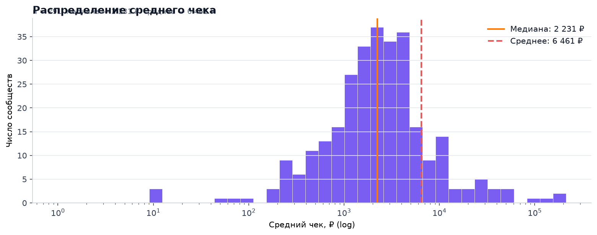
УвеличитьГистограмма по 291 сообществу, у которого есть и заказы, и заполненный чек; шкала X логарифмическая. Медиана — около 2 200 ₽, среднее — около 6 500 ₽: распределение сдвинуто вправо единичными крупными чеками (максимум — 211,8 тыс. ₽). Для сравнения: средний чек всего Маркета в «Итогах» — 3 781 ₽, Партнёра — 1 039 ₽. Выборка сообществ ближе к модели Маркета: небольшие продавцы с относительно дорогим товаром.
График
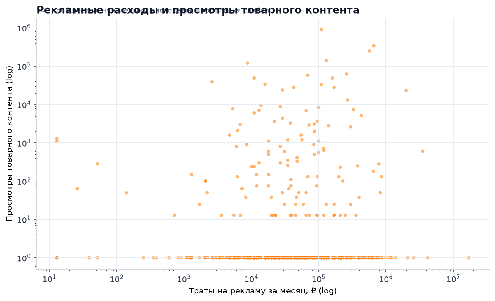
УвеличитьОси логарифмические, точка — сообщество; включены 542 сообщества с ненулевыми расходами. Суммарные траты — 92,4 млн ₽, медиана среди рекламодателей — 45,0 тыс. ₽. Облако не образует чёткой линии: корреляция лог-значений всего 0,004. То есть объём бюджета сам по себе не объясняет просмотры — решают таргетинг, креатив и органическая дистрибуция. Для платформы это аргумент в пользу продажи не «показов», а результата.
График
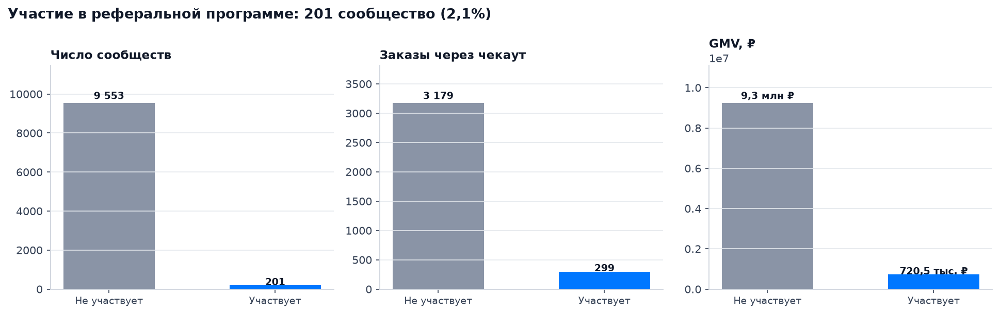
УвеличитьТри панели: число сообществ, заказы, GMV — для участников (синий) и неучастников (серый). Участвуют всего 201 сообщество (2,1%), но на них приходится 720,5 тыс. ₽ GMV из 9,97 млн — 7,2%. Средний GMV участника — 3 584 ₽ против 969 ₽ у остальных, в 3,7 раза больше. Это не доказательство причинности (в программу идут уже активные), но сильный сигнал: реферальный контур концентрирует наиболее «торгующих» продавцов.
График и таблица
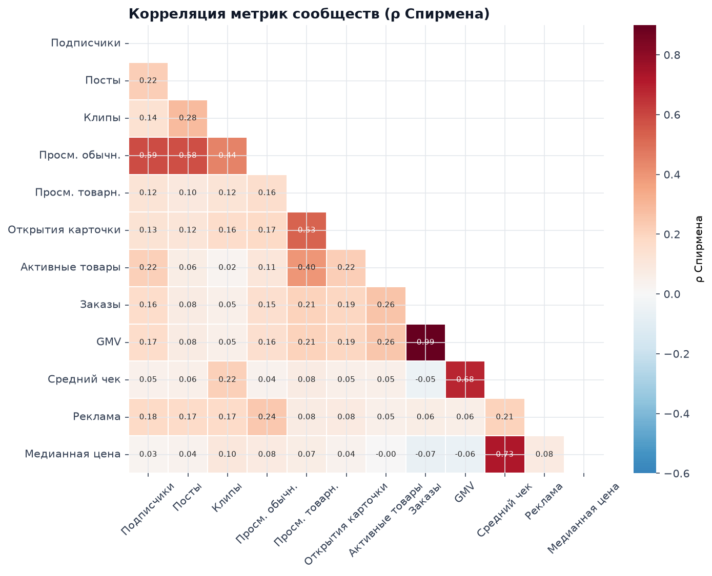
Увеличить| Заказы через чекаут | |
|---|---|
| GMV через чекаут, ₽ | 0.99 |
| Число активных товаров в каталоге | 0.26 |
| Просмотры товарного контента | 0.21 |
| Открытия карточки товара из контента | 0.19 |
| Число подписчиков | 0.16 |
| Просмотры обычного контента | 0.15 |
Коэффициент Спирмена ρ показывает монотонную связь, устойчивую к выбросам; шкала от −1 до +1, красное — прямая связь, синее — обратная. Читаем строку «Заказы»: сильнее всего с ней связаны GMV (ρ ≈ 0,99 — механическая связь), число активных товаров (ρ ≈ 0,26), загруженные товары (0,24) и просмотры товарного контента (0,21); открытия карточки дают 0,19, подписчики — 0,16. Вывод: размер аудитории — не главный предиктор продаж; важнее наличие товара в каталоге и способность вести трафик в карточку, хотя и эти связи умеренные.
Таблица
| ID бизнеса | Тематика | Тип бизнеса (товары / услуги) | Число подписчиков | Число активных товаров в каталоге | Открытия карточки товара из контента | Заказы через чекаут | GMV через чекаут, ₽ | Средний чек, ₽ |
|---|---|---|---|---|---|---|---|---|
| 8130 | Технологии | товарное | 38000 | 984 | 0 | 13 | 635 250 | 53 835 |
| 8697 | Кулинария и еда | товарное | 9800 | 179 | 0 | 249 | 510 440 | 2 050 |
| 5626 | Транспорт | товарное | 77000 | 5354 | 9 | 129 | 470 730 | 3 660 |
| 5791 | Технологии | товарное | 3100 | 87 | 0 | 2 | 464 980 | 197 023 |
| 1294 | Кулинария и еда | товарное | 6600 | 277 | 0 | 307 | 455 320 | 1 484 |
| 8757 | Товары и магазины | товарное | 200000 | 1083 | 462 | 54 | 431 530 | 7 950 |
| 4974 | Игры | товарное | 42000 | 302 | 0 | 543 | 345 510 | 640 |
| 7437 | Красота и здоровье | товарное | 1700 | 712 | 3 | 37 | 322 940 | 8 828 |
| 9621 | Образование | товарное и услужное | 4100 | 1 | 0 | 4 | 299 630 | 84 640 |
| 2730 | Товары и магазины | товарное | 3500 | 68 | 0 | 2 | 279 980 | 118 633 |
| 6471 | Кулинария и еда | товарное | 5000 | 168 | 53 | 117 | 261 590 | 2 239 |
| 8997 | Дом и ремонт | товарное | 11000 | 18 | 0 | 31 | 258 560 | 8 428 |
| 3582 | Транспорт | товарное | 140 | 4 | 0 | 1 | 249 880 | 211 758 |
| 5354 | Товары и магазины | товарное и услужное | 71000 | 1430 | 1 | 47 | 232 850 | 4 933 |
| 7248 | Мода и стиль | товарное | 50000 | 215 | 0 | 85 | 216 000 | 2 542 |
Таблица показывает крупнейших продавцов выборки: ID, тематику, тип, аудиторию, число активных товаров, открытия карточки, заказы, GMV и средний чек. Топ-15 дают 54,5% всего GMV выборки при доле в сообществах 0,15%. Обратите внимание: у части лидеров небольшая аудитория, но много активных товаров и открытий — ещё одно подтверждение, что каталог и трафик важнее подписчиков.
Здесь сопоставлены два сегмента одного месяца: Маркет ВКонтакте (собственная витрина и чекаут платформы) и Партнёр 1 (внешний маркетплейс, интегрированный в ВКонтакте). Это главный лист для ответа на вопрос «какую роль играет Маркет».
Длина полосы — соотношение значений; справа — отношение Маркет / Партнёр. Больше единицы — впереди Маркет, меньше — Партнёр.
Для процентных метрик (CR, повторные покупки) полоса показывает вклад в сумму двух значений, а не долю рынка. Абсолютные значения — из листа «Итоги»; средний чек, CR и повторные покупки рассчитаны из абсолютов.
Значения приведены как в файле; производные показатели рассчитаны отдельно и помечены.
Таблица
| Метрика | Маркет ВКонтакте | Партнёр 1 | Доля Маркета |
|---|---|---|---|
| Показы товаров | 4,78 млрд | 5,73 млрд | 45,5% |
| Открытия карточки | 193,5 млн | 86,9 млн | 69,0% |
| Нажатия на кнопку | 5,97 млн | 36,63 млн | 14,0% |
| Оформленные заказы | 414 тыс. | 5 млн | 7,7% |
| Оплаченные заказы | 5 тыс. | — | — |
| GMV | 1,56 млрд ₽ | 5,12 млрд ₽ | 23,4% |
| Средний чек | 4 тыс. ₽ | 1 тыс. ₽ | ×3,64 |
| Уникальные покупатели | 296 тыс. | 3 млн | 9,3% |
| Заказов на покупателя | 1,4 | 1,7 | — |
| Доля повторных покупателей | 19,0% | 26,6% | — |
| CR: показ → открытие | 4,05% | 1,52% | — |
| CR: открытие → заказ | 0,21% | 5,67% | — |
| CR: показ → заказ | 0,009% | 0,086% | — |
| Прямые переходы к Партнёру | — | 106,9 млн | — |
Строки — метрики, три числовых столбца — значения сегментов и доля Маркета ВКонтакте в общем показателе. Ключевые числа: 4,78 млрд показов у Маркета против 5,73 млрд у Партнёра (45,5% против 54,5%), но 193,5 млн открытий против 86,9 млн (69,0% против 31,0%). Дальше пропорции переворачиваются: 413,7 тыс. заказов против 4,93 млн (7,7% против 92,3%) и 1,56 млрд ₽ против 5,12 млрд ₽ GMV (23,4% против 76,6%). То есть Маркет выигрывает верх воронки и проигрывает низ: он приводит людей в карточку, но завершает сделку партнёр.
График и таблица
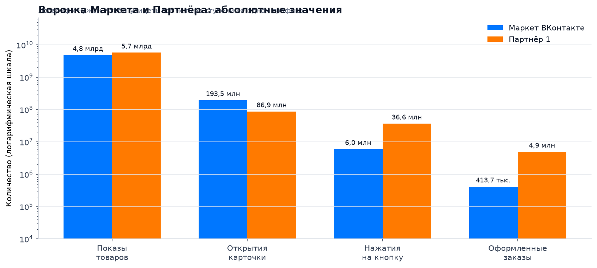
Увеличить| Ступень | Маркет | Партнёр | Доля Маркета, % |
|---|---|---|---|
| Показы товаров | 4,777,750,023 | 5,729,628,790 | 45.5 |
| Открытия карточки | 193,512,461 | 86,882,822 | 69.0 |
| Нажатия на кнопку | 5,969,063 | 36,626,075 | 14.0 |
| Оформленные заказы | 413,740 | 4,927,525 | 7.7 |
Четыре ступени слева направо: показы → открытия карточки → нажатия на кнопку → заказы. Синие столбцы — Маркет, оранжевые — Партнёр, шкала Y логарифмическая. Читать по парам: на показах паритет (4,8 против 5,7 млрд), на открытиях Маркет впереди в 2,2 раза, на нажатиях уже отстаёт в 6,1 раза, на заказах — в 11,9 раза. Это визуальный «крест»: линия Маркета падает круче. Причина — не показы, а глубина воронки: люди охотно смотрят карточку, но редко покупают внутри Маркета.
График и таблица
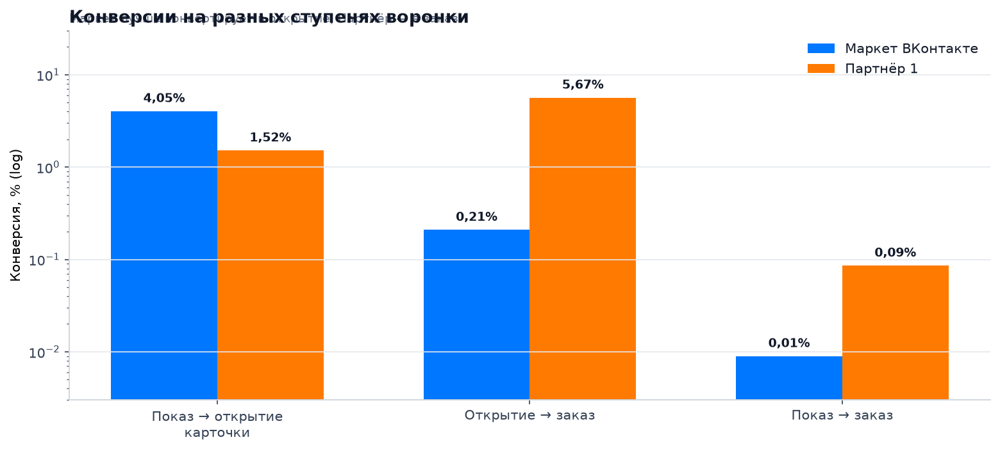
Увеличить| Показатель | Маркет | Партнёр |
|---|---|---|
| Открытие → нажатие, % | 3.08 | 42.16 |
| Нажатие → заказ, % | 6.93 | 13.45 |
| Заказов на 1 000 показов | 0.09 | 0.86 |
| GMV на 1 000 показов, ₽ | 327.47 | 893.52 |
| GMV на покупателя, ₽ | 5282.99 | 1764.54 |
| Доля оплаченных заказов, % | 1.19 | — |
Три пары столбцов, шкала Y логарифмическая, потому что конверсии различаются на порядки. Первая пара: показ → открытие карточки — 4,05% у Маркета против 1,52% у Партнёра, Маркет в 2,7 раза лучше. Вторая: открытие → заказ — 0,21% против 5,67%, Партнёр в 27 раз лучше. Третья: сквозная показ → заказ — 0,009% против 0,086%, Партнёр в 9,6 раза лучше.
Дополнительная таблица раскрывает механику: у Партнёра 42,2% открытий доходят до нажатия кнопки против 3,1% у Маркета, а нажатие превращается в заказ в 13,5% случаев против 6,9%. Значит, у Партнёра сильнее не только «желание нажать», но и транзакционный сценарий: привычный чекаут, доставка, узнаваемость маркетплейса.
График
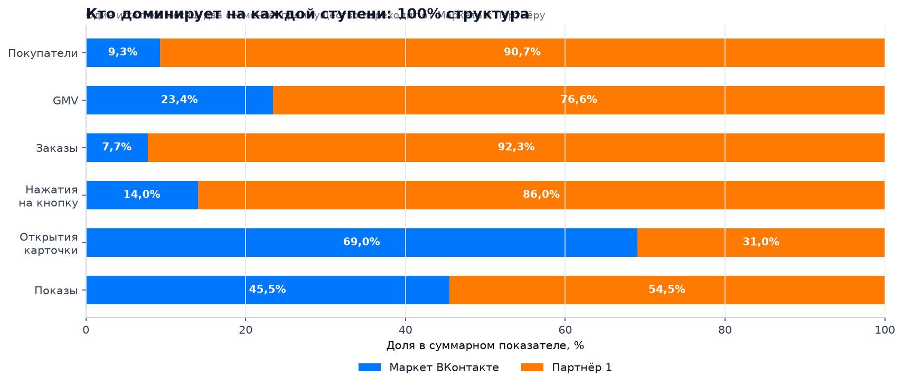
УвеличитьКаждая строка — ступень воронки, длина полосы = 100%, синяя часть — вклад Маркета, оранжевая — Партнёра. Это самый наглядный график о роли: Маркет ведёт на показах (45,5%) и доминирует на открытиях карточки (69,0%), но уступает на нажатиях (14,0%), заказах (7,7%), GMV (23,4%) и покупателях (9,3%). Перелом происходит между открытием карточки и нажатием кнопки. Именно там Маркет теряет пользователя. Гипотезы: цена, доверие к чекауту, срок доставки, ассортимент.
График
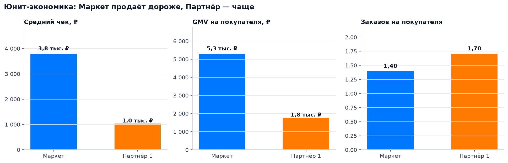
УвеличитьТри панели: средний чек, GMV на покупателя, число заказов на покупателя; синий — Маркет, оранжевый — Партнёр. Средний чек Маркета 3 781 ₽ против 1 039 ₽ (в 3,64 раза выше), GMV на покупателя 5 283 ₽ против 1 765 ₽ (в 2,99 раза), заказов на покупателя 1,40 против 1,71 (на 18% меньше). Портрет: Маркет — «редкие дорогие покупки», Партнёр — «частые недорогие». Это два разных потребительских сценария, а не конкуренты за одного и того же покупателя.
График
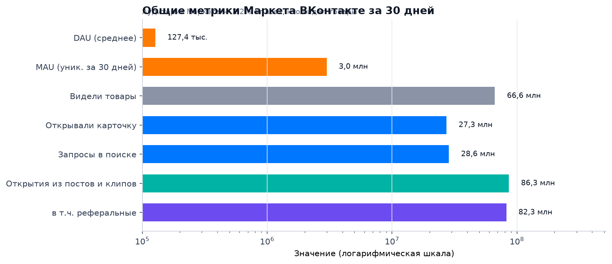
УвеличитьГоризонтальные столбцы, логарифмическая шкала. Сверху вниз: DAU 127 тыс., MAU 3,0 млн, 66,6 млн видели товары, 27,3 млн открывали карточку, 28,6 млн поисковых запросов, 86,3 млн открытий из постов и клипов, из них 82,3 млн — реферальные.
Три вывода. Первый: DAU/MAU = 4,3% — очень низкая «прилипчивость»: Маркетом пользуются эпизодически, чаще всего случайно наткнувшись на товар. Второй: карточку открывает 41,0% видевших товар — верх воронки работает. Третий: 95,4% открытий из контента — реферальные, то есть контент авторов и клипы, а не собственная витрина, являются главным входом.
График
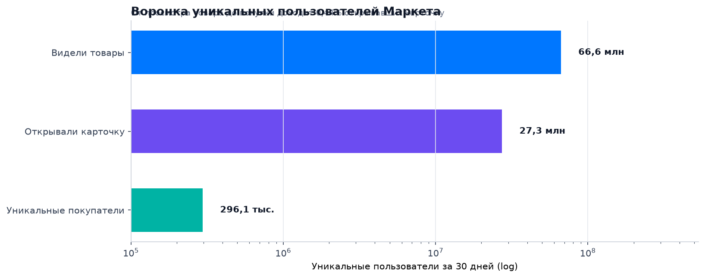
УвеличитьТри ступени по уникальным людям за 30 дней: 66,6 млн видели товары → 27,3 млн открывали карточку (41,0%) → 296 тыс. купили (1,08% открывавших и 0,44% видевших). Шкала логарифмическая. Это «жёсткая» воронка: между интересом и покупкой теряется 99% людей. Для сравнения, у Партнёра покупателей 2,9 млн — почти в 10 раз больше при меньшем числе открытий карточки. Разрыв объясняется не охватом, а транзакционным опытом.
График
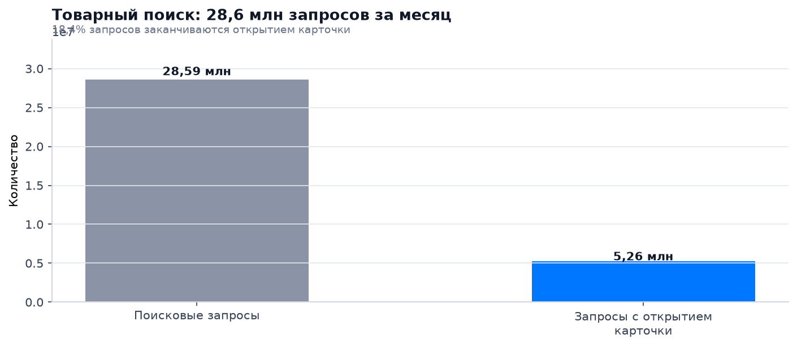
УвеличитьДва столбца: все запросы в товарном поиске и те, что завершились открытием карточки. 28,6 млн запросов, 5,26 млн с открытием — конверсия 18,4%. При этом поиск даёт лишь 2,7% всех открытий карточки Маркета (5,26 из 193,5 млн). Парадокс: поиском пользуются много, но он не является главным входом — люди приходят из контента. Значит, инвестиции в поиск дают ограниченный прирост, а инвестиции в контент и реферальные механики — основной.
График
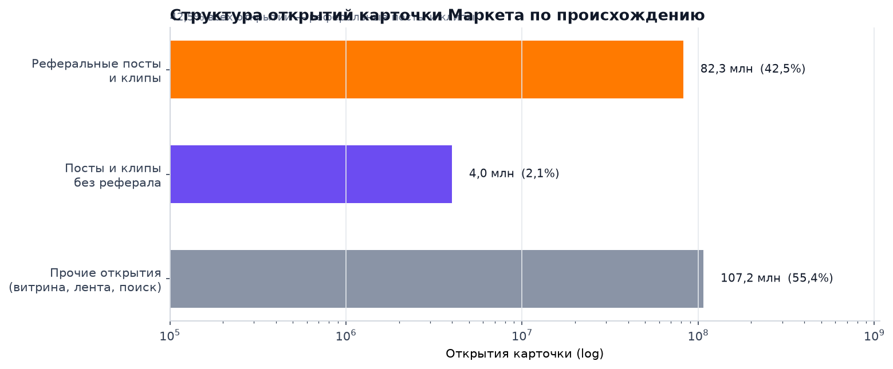
УвеличитьТри категории происхождения открытий карточки, логарифмическая шкала. Реферальные посты и клипы — 82,3 млн (42,5%), посты и клипы без реферала — 3,9 млн (2,0%), прочие каналы (витрина, лента, поиск, главная) — 107,3 млн (55,5%). Формально «прочие» больше, но если объединить весь контент — 44,6%. Главное: реферальный контент — крупнейший единый источник, сопоставимый со всеми остальными вместе. Это и есть социальная коммерция в действии.
30 дней наблюдений позволяют проверить устойчивость средних, увидеть недельный цикл и оценить, растёт ли Маркет внутри месяца. Все ряды агрегированы по дням.
Таблица
| Дата | DAU Маркета Вконтакте | Показы товаров: Маркет Вконтакте | Заказы: Маркет Вконтакте | GMV, ₽: Маркет Вконтакте | CR_VK | AOV_VK | |
|---|---|---|---|---|---|---|---|
| 0 | 2026-09-01 | 128656 | 164388078 | 20370 | 66555585 | 0.34 | 3267.33 |
| 1 | 2026-09-02 | 121217 | 160332304 | 12687 | 49599901 | 0.21 | 3909.51 |
| 2 | 2026-09-03 | 125152 | 163016247 | 13428 | 56951176 | 0.22 | 4241.23 |
| 3 | 2026-09-04 | 127084 | 168725840 | 15366 | 52908793 | 0.24 | 3443.24 |
| 4 | 2026-09-05 | 120908 | 155051855 | 15191 | 53443710 | 0.24 | 3518.12 |
Показаны первые пять дней и вычисленные поля: CR_VK (конверсия открытие → заказ), AOV_VK (средний чек), PAID_SHARE (доля оплаченных), накопительный GMV. Эти производные используются во всех графиках раздела. Проверка периода: 1–30 сентября 2026, 30 наблюдений, пропусков нет.
График
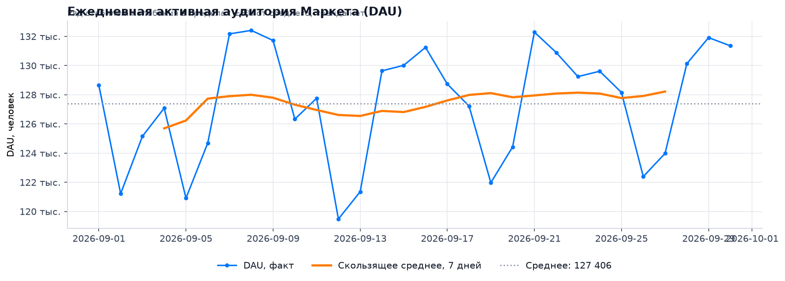
УвеличитьСиняя линия — факт по дням, оранжевая — скользящее среднее за 7 дней, пунктир — среднее за месяц. Ось Y в тысячах человек. DAU колеблется в коридоре примерно 119–132 тыс., среднее — 127,4 тыс., коэффициент вариации низкий. Скользящая линия почти горизонтальна: внутри месяца Маркет не растёт и не падает, он живёт в стабильном режиме. Это важно для прогнозов: месячные средние можно экстраполировать, но органического роста из данных не видно.
График
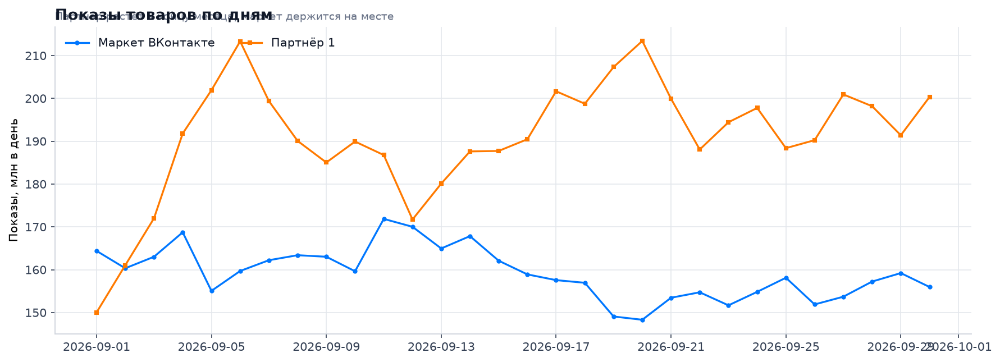
УвеличитьДве линии: синяя — Маркет, оранжевая — Партнёр, по дням сентября, в млн показов. У Маркета коридор 148–172 млн в день без выраженного тренда. У Партнёра — от 150 млн в начале до 200–213 млн во второй половине; линейный тренд положительный. То есть инвентарь показов перетекает к Партнёру: витрина ВКонтакте всё активнее показывает товары внешнего маркетплейса, а собственные показы остаются стабильными.
График
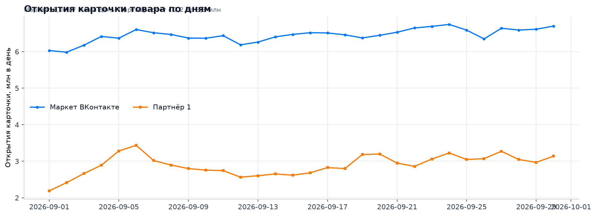
УвеличитьТе же две линии, но по открытиям карточки. Маркет держится в узком коридоре 6,0–6,7 млн в день. Партнёр начинает с 2,2 млн и заканчивает 3,1–3,4 млн; средний уровень последних пяти дней на 15,3% выше первых пяти. Вывод: разрыв в открытиях сокращается, хотя Маркет всё ещё впереди. Если тренд сохранится, через несколько месяцев Партнёр сравняется с Маркетом по глубине просмотра.
График
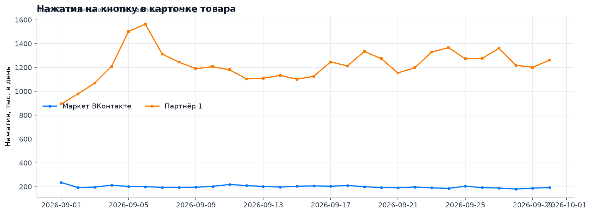
УвеличитьОсь Y — тысячи нажатий в день. Синяя линия Маркета — около 180–235 тыс., оранжевая Партнёра — 0,9–1,6 млн. Отношение стабильно 6–7 раз в пользу Партнёра. Обратите внимание на синхронность: всплески и провалы у обоих сегментов часто совпадают — значит, на клик влияет общий трафик ВКонтакте (будни/выходные, события), а не только внутренняя механика сегмента.
График
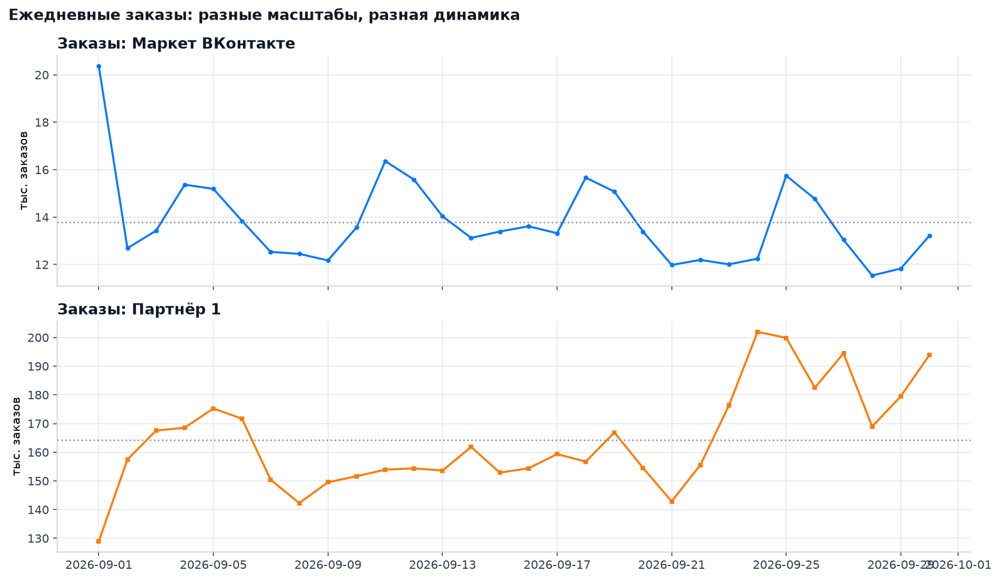
УвеличитьДве панели с общей осью времени: сверху Маркет, снизу Партнёр, обе в тысячах заказов. Масштабы разные: Маркет — 11,5–20,4 тыс. в день, Партнёр — 129–202 тыс. Пунктир — среднее. У Маркета пики приходятся на отдельные дни, у Партнёра — устойчивый рост во второй половине месяца. Сравнение последней и первой недели: Маркет −10,7%, Партнёр +18,0%. Динамика роста сосредоточена в партнёрском сегменте.
График
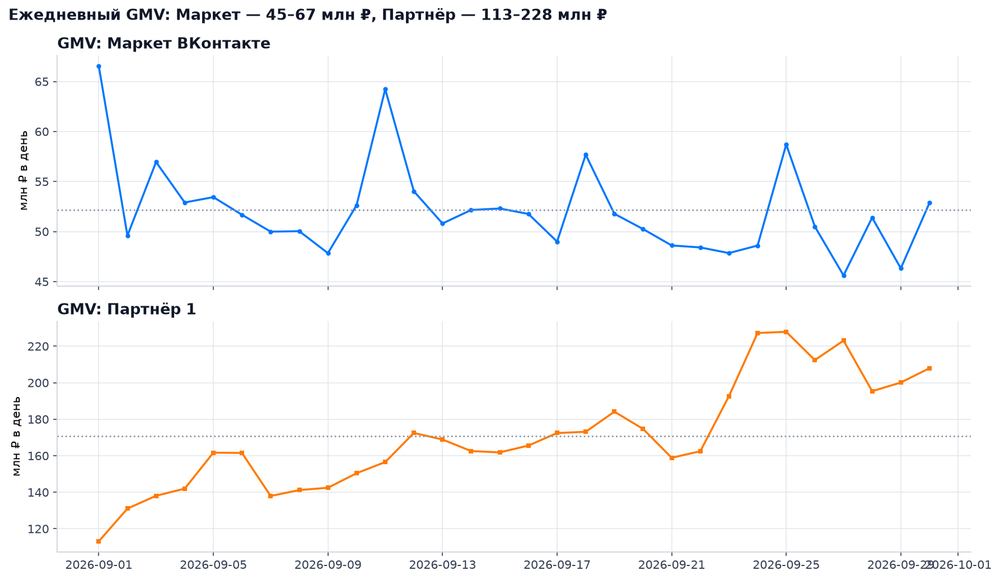
УвеличитьДве панели, млн ₽ в день. Маркет: 45–67 млн ₽, среднее около 52 млн. Партнёр: от 113 млн в начале до 227 млн в конце, среднее около 171 млн, выраженный восходящий тренд. К концу месяца дневной GMV Партнёра в 4–5 раз превышает GMV Маркета. Это ключевой аргумент: деньги в экосистеме делает партнёрская модель, а Маркет остаётся витриной с высоким чеком, но небольшим оборотом.
График
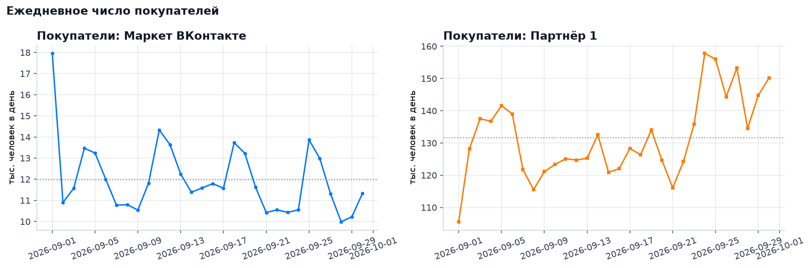
УвеличитьДве панели, тыс. человек в день. Маркет — 10–18 тыс., Партнёр — 106–158 тыс. Обе линии колеблются синхронно в недельном ритме: просадки в начале недели, подъём к выходным. Пунктир — среднее. Отношение примерно 1:10. Это ещё раз подтверждает: покупательская масса сконцентрирована в Партнёре, а Маркет обслуживает нишевый спрос.
График
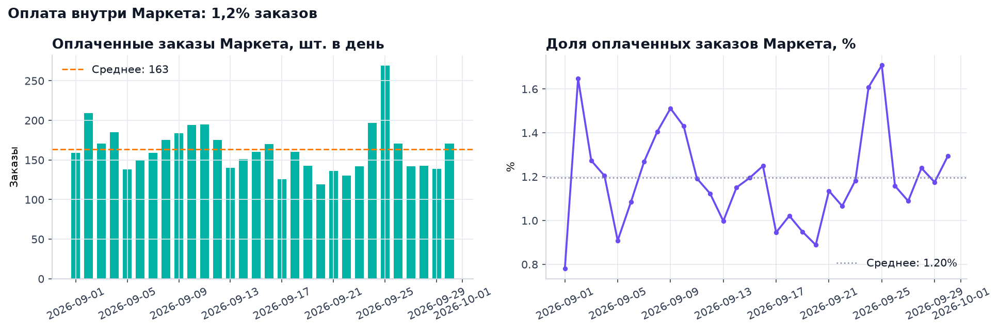
УвеличитьСлева — абсолютное число оплаченных заказов Маркета по дням, справа — их доля в оформленных заказах. Среднее — около 163 оплат в день, доля — 1,2%. Пики 25 сентября (269) и 2 сентября (209) не меняют картины. Ключевой вывод: чекаут Маркета почти не используется для оплаты онлайн — 98,8% оформленных заказов не оплачиваются внутри платформы (оплата при получении, переход на сторонний сайт или отмена). Это ограничение транзакционной модели.
График
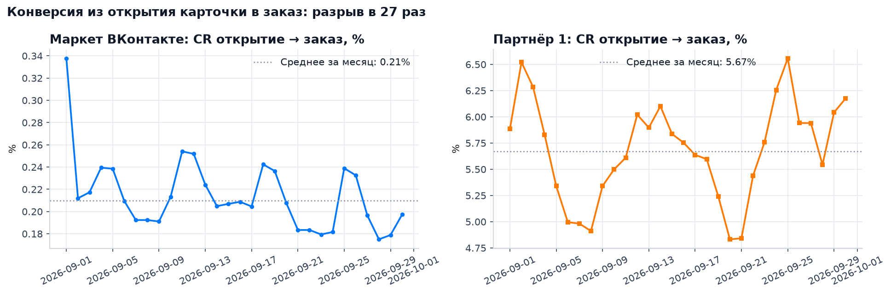
УвеличитьДве панели с одинаковой шкалой времени, но разными масштабами Y. Маркет: 0,18–0,34%, вокруг среднего 0,21%. Партнёр: 4,8–6,6%, среднее 5,67%. Разрыв стабилен каждый день месяца — это не разовая аномалия, а структурное свойство. Маркет не конвертирует открытие в заказ так, как это делает маркетплейс: сказываются доверие, привычка, ассортимент, доставка и сам чекаут.
График
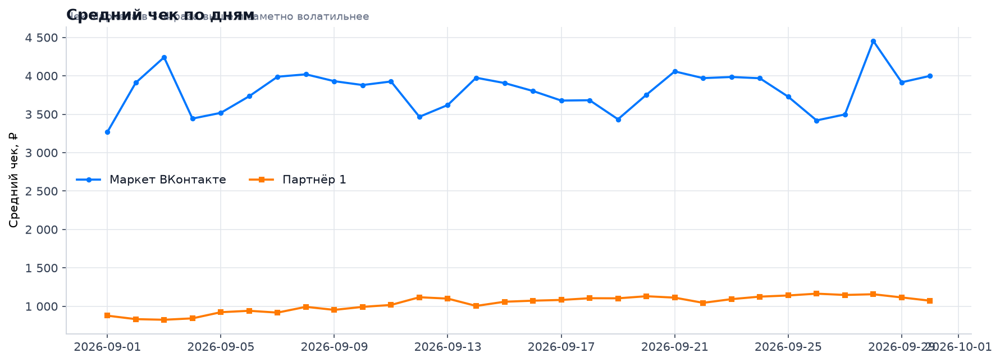
УвеличитьДве линии, ₽. Маркет: 3 267–4 454 ₽, среднее 3 806 ₽. Партнёр: 824–1 164 ₽, среднее 1 035 ₽. У Маркета чек волатильнее — единичные дорогие заказы сильнее двигают среднее при небольшом объёме. У Партнёра чек почти плоский: масса дешёвых заказов стабилизирует среднее. Экономически это разные рынки: Маркет — техника, мебель, крупные товары; Партнёр — повседневные покупки.
График
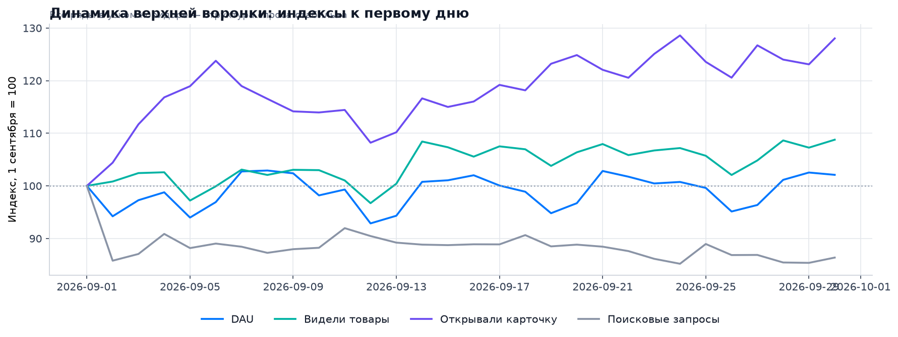
УвеличитьКаждый ряд нормирован на своё значение 1 сентября (индекс = 100), поэтому на одном графике видны относительные изменения. Все четыре линии — DAU, видевшие товары, открывавшие карточку, поисковые запросы — держатся в коридоре примерно 85–129. Ни один канал не растёт кратно. Вывод: верхняя воронка стабильна, колебания носят недельный характер. Рост нижней воронки Партнёра — результат не роста трафика, а лучшей монетизации того же трафика.
График и таблица
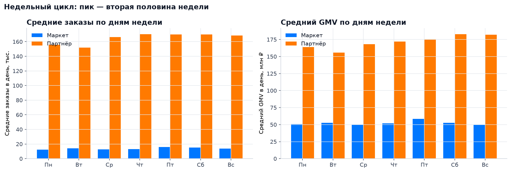
Увеличить| Заказы_Маркет | Заказы_Партнёр | GMV_Маркет | GMV_Партнёр | |
|---|---|---|---|---|
| День недели | ||||
| Пн | 12294.0 | 156016.0 | 50539750.0 | 163687866.0 |
| Вт | 14047.0 | 151823.0 | 52728647.0 | 155734317.0 |
| Ср | 12740.0 | 166314.0 | 49984383.0 | 167928488.0 |
| Чт | 13141.0 | 170118.0 | 51796822.0 | 172034237.0 |
| Пт | 15784.0 | 169757.0 | 58382620.0 | 174872498.0 |
| Сб | 15155.0 | 169745.0 | 52436180.0 | 182666945.0 |
| Вс | 13577.0 | 168575.0 | 49590026.0 | 182038618.0 |
Слева — средние заказы по дням недели, справа — средний GMV; синий — Маркет, оранжевый — Партнёр. У обоих сегментов провал в понедельник-вторник и подъём со среды по пятницу. Пик Партнёра — четверг, у Маркета — пятница. Размах: у Маркета заказы меняются на 28% между худшим и лучшим днём, у Партнёра — на 12%. Практический вывод: рекламные и промо-бюджеты выгоднее ставить на среду–субботу, а не на начало недели.
График
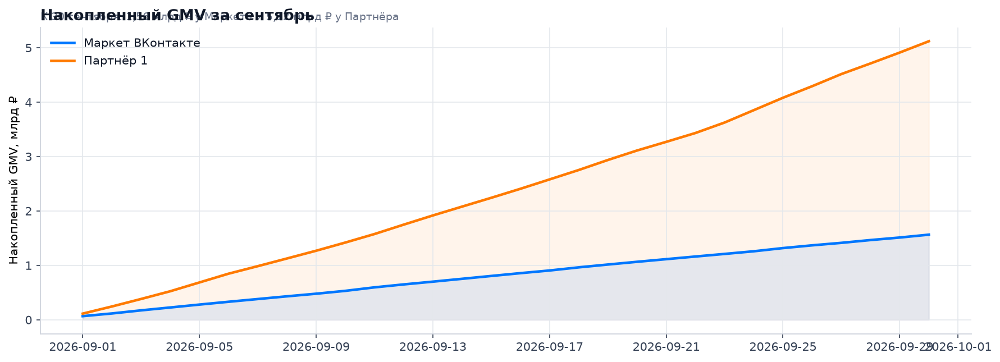
УвеличитьДве накопительные кривые, млрд ₽. Наклон линии = дневная выручка. У Маркета наклон почти постоянный, у Партнёра — увеличивается к концу месяца, кривая заметно выгибается вверх. К 30 сентября накопленный GMV: 1,56 млрд ₽ против 5,12 млрд ₽. Если наклон Партнёра сохранится, разрыв будет расти. Для Маркета это означает необходимость либо повышать конверсию, либо переходить к модели, где партнёрский оборот учитывается как его собственный результат.
График
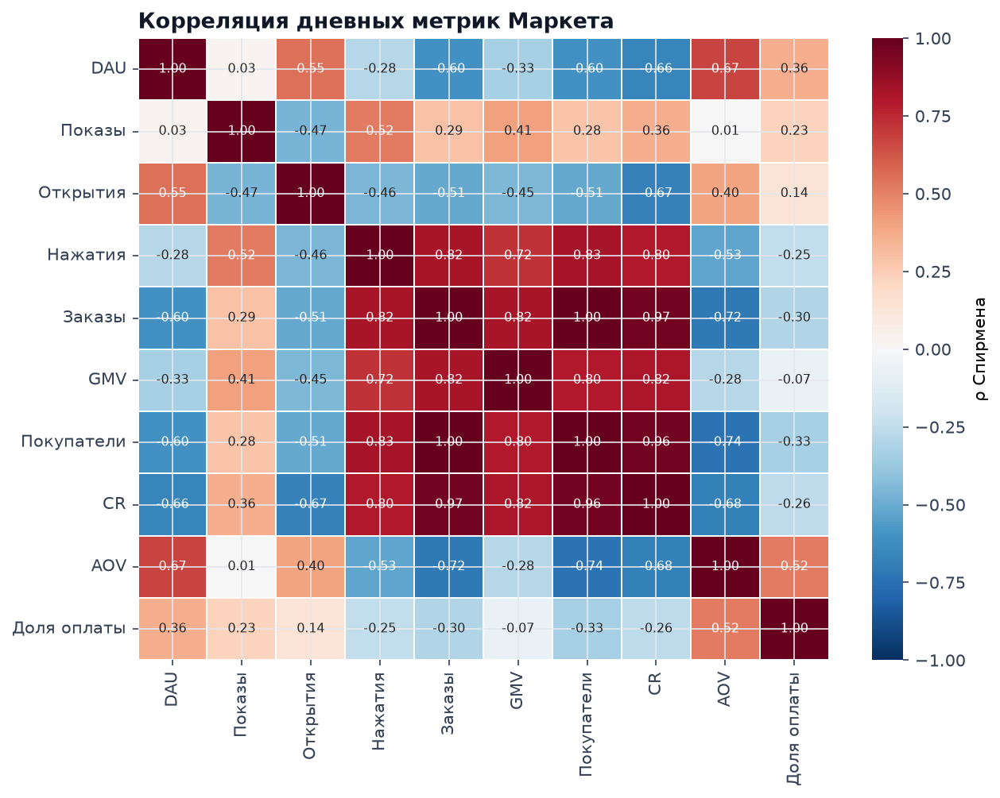
УвеличитьМатрица Спирмена по 30 дневным наблюдениям Маркета. Заказы почти совпадают с покупателями (ρ ≈ 1,00 — механическая связь) и тесно связаны с нажатиями (0,82) и конверсией (0,97); с показами связь слабая (0,29), а с открытиями карточки — отрицательная (−0,51). Средний чек с заказами связан отрицательно (−0,72): в дни с большим числом заказов чек ниже (массовые дешёвые покупки). Это подтверждает: объём продаж определяется кликами и конверсией, а не шириной охвата.
Лист показывает, какие каналы приводят пользователя к карточке товара. Сумма по шести каналам ровно совпадает с открытиями карточки в «Итогах» (193,5 млн у Маркета и 86,9 млн у Партнёра), поэтому анализируем и доли, и абсолюты. Строка «в т.ч. из реферальных постов и клипов» — вложенная детализация, её нельзя прибавлять к каналам, иначе получится задвоение.
Строка «в т.ч. из реферальных постов и клипов» — не отдельный канал, а вложенная детализация. В основные графики она не включается, чтобы не задваивать счёт.
Таблица
| Источник | Маркет Вконтакте | Доля, %: Маркет Вконтакте | Партнёр 1 | Доля, %: Партнёр 1 |
|---|---|---|---|---|
| Другое | 77,753,037 | 40.2 | 5,380,616 | 6.2 |
| Витрина магазина | 75,604,323 | 39.1 | 714,540 | 0.8 |
| Лента | 18,795,696 | 9.7 | 15,622,386 | 18.0 |
| Клипы | 17,239,066 | 8.9 | 64,917,109 | 74.7 |
| Поиск | 3,707,521 | 1.9 | 159,788 | 0.2 |
| Главная Маркета Вконтакте | 412,818 | 0.2 | 88,383 | 0.1 |
Шесть каналов и их доли для каждого сегмента. У Маркета картина «плоская»: «Другое» 40,2%, «Витрина магазина» 39,1%, «Лента» 9,7%, «Клипы» 8,9%, «Поиск» 1,9%, «Главная Маркета» 0,2%. У Партнёра — резко концентрированная: «Клипы» 74,7%, «Лента» 18,0%, «Другое» 6,2%, «Витрина» 0,8%. Это два разных механизма привлечения: у Маркета — витрина и «длинный хвост» каналов, у Партнёра — короткие видео.
График
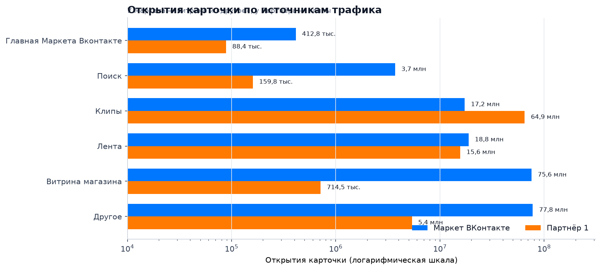
УвеличитьГоризонтальные столбцы, логарифмическая шкала X, сверху пара для Маркета, снизу для Партнёра. Логарифм нужен из-за разброса от 88 тыс. до 77,8 млн. Читать по парам: у Маркета «Другое» и «Витрина магазина» почти равны (77,8 и 75,6 млн), у Партнёра «Клипы» (64,9 млн) в 4,2 раза больше следующего канала «Лента» (15,6 млн) и в 91 раз больше «Витрины» (0,7 млн). Партнёр живёт клипами, Маркет — витриной.
График
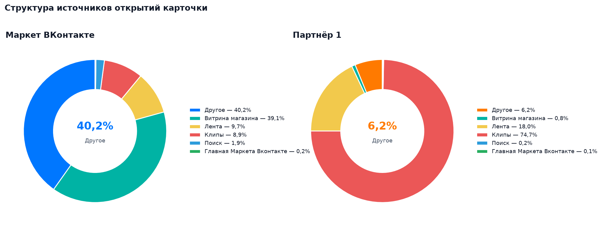
УвеличитьСлева — Маркет, справа — Партнёр; в центре — крупнейший канал, в легенде — все доли. У Маркета нет доминанты: два канала примерно равны (40,2% и 39,1%), остальные суммарно 20,7%. У Партнёра один канал определяет всё: клипы 74,7%, вместе с лентой — 92,7%. Концентрация канала — риск: изменения в алгоритме клипов или модерации способны резко сократить трафик Партнёра. У Маркета структура диверсифицирована, но слабо управляема: 40% приходится на нерасшифрованное «Другое».
График
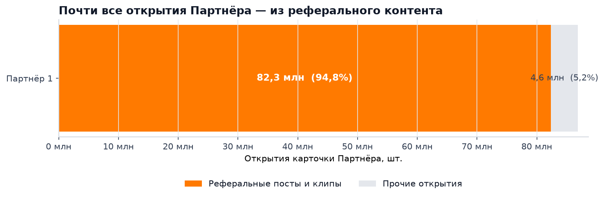
УвеличитьОдна горизонтальная полоса, разделённая на две части: оранжевая — открытия из реферальных постов и клипов (82,3 млн; 94,8%), серая — все остальные (4,6 млн; 5,2%). Это самый сильный факт о Партнёре: его трафик почти полностью создаётся авторами ВКонтакте, а не собственной витриной. Роль платформы здесь — не магазин, а дистрибуция контента и социальный граф.
18 категорий, для каждой — открытия карточки и заказы в двух сегментах. Категории «Другое», «Все товары» и «Не определена» — служебные, они искажают конверсию и рассматриваются отдельно.
Таблица
| Категория | Открытия карточки: Маркет Вконтакте | Заказы: Маркет Вконтакте | Открытия карточки: Партнёр 1 | Заказы: Партнёр 1 |
|---|---|---|---|---|
| Другое | 29082926 | 41 | 160 | 0 |
| Все товары | 1441409 | 205 | 3098084 | 138949 |
| Не определена | 193354 | 159 | 0 | 117818 |
Три строки, которые нельзя считать товарными. «Другое» у Маркета: 29,1 млн открытий и 41 заказ — очевидно, карточки не определены. «Не определена» у Партнёра: 0 открытий и 117 818 заказов — обратная аномалия. «Все товары» — агрегированная витрина. Эти строки исключены из расчёта конверсий, но сохранены в общих суммах, чтобы не искажать общий объём.
График и таблица
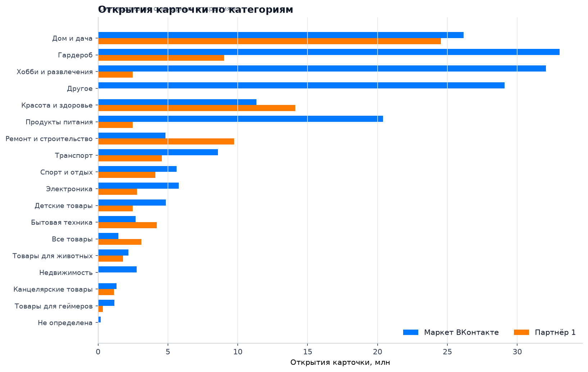
Увеличить| Категория | Открытия карточки: Маркет Вконтакте | Открытия карточки: Партнёр 1 | Открытия всего |
|---|---|---|---|
| Дом и дача | 26,162,824 | 24,528,887 | 50,691,711 |
| Гардероб | 33,022,954 | 9,023,244 | 42,046,198 |
| Хобби и развлечения | 32,048,705 | 2,474,633 | 34,523,338 |
| Другое | 29,082,926 | 160 | 29,083,086 |
| Красота и здоровье | 11,345,073 | 14,113,274 | 25,458,347 |
| Продукты питания | 20,393,319 | 2,488,477 | 22,881,796 |
| Ремонт и строительство | 4,823,519 | 9,737,416 | 14,560,935 |
| Транспорт | 8,590,002 | 4,569,160 | 13,159,162 |
Горизонтальные столбцы, млн открытий, сортировка по сумме двух сегментов. Топ Маркета: «Гардероб» 33,0 млн, «Хобби и развлечения» 32,0 млн, «Другое» 29,1 млн, «Дом и дача» 26,2 млн, «Продукты питания» 20,4 млн. Топ Партнёра: «Дом и дача» 24,5 млн, «Красота и здоровье» 14,1 млн, «Ремонт и строительство» 9,7 млн, «Гардероб» 9,0 млн. Совпадение только в «Доме и даче» и «Гардеробе»; в остальном Маркет тяготеет к хобби и контенту, Партнёр — к бытовым и ремонтным товарам.
График
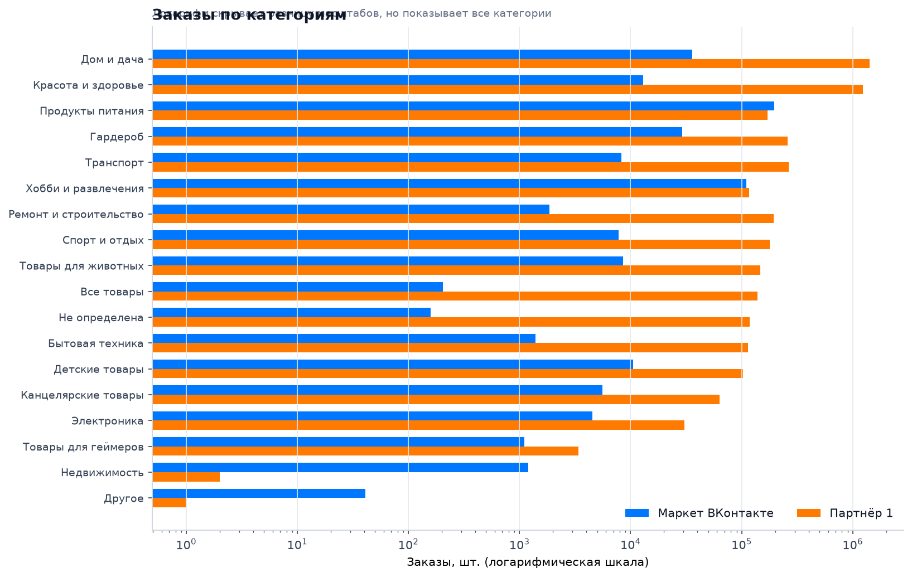
УвеличитьЛогарифмическая шкала X, чтобы вместить диапазон от 0 до 1,4 млн. У Маркета заказы концентрируются в «Продуктах питания» (195 355; 44,9% всех заказов по категориям) и «Хобби» (110 703; 25,4%). У Партнёра — «Дом и дача» (1 413 965; 31,0%) и «Красота» (1 240 324; 27,2%). Обратите внимание на несоответствие: «Гардероб» — лидер по открытиям у Маркета (33 млн), но лишь 29 тыс. заказов. Смотрят одежду, покупают еду.
График
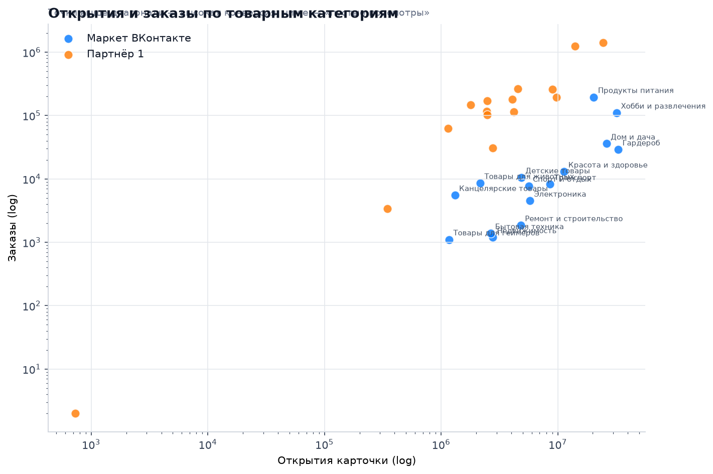
УвеличитьКаждая точка — товарная категория, синие — Маркет, оранжевые — Партнёр; обе оси логарифмические, подписи — названия категорий. Положение по вертикали относительно облака показывает конверсию: «Продукты питания» у Маркета — высоко (много заказов при умеренных открытиях), «Гардероб» — низко (много открытий, мало заказов). У Партнёра «Дом и дача» и «Красота» — в верхней части. Это карта спроса: открытие карточки и покупка — разные решения, и категория определяет разрыв.
График
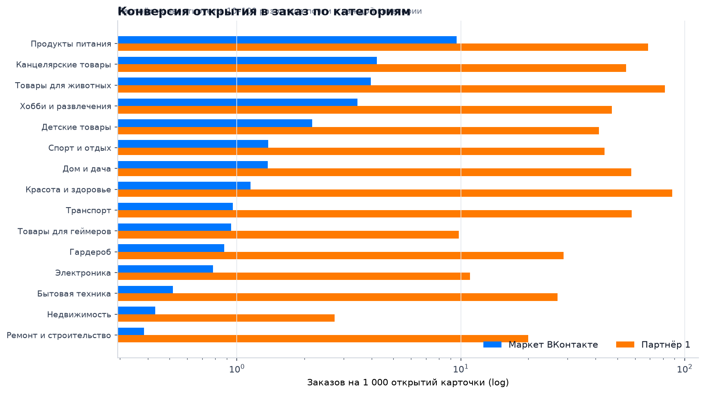
УвеличитьСтолбцы — заказов на 1 000 открытий карточки, логарифмическая шкала; синий — Маркет, оранжевый — Партнёр. У Маркета лучшие категории — «Продукты питания» (9,6 заказа на 1 000 открытий), «Канцелярские товары» (4,2), «Товары для животных» (4,0) и «Хобби» (3,5), худшие — «Ремонт и строительство» (0,4), «Недвижимость» (0,4) и «Бытовая техника» (0,5). У Партнёра лидеры — «Красота и здоровье» (87,9), «Товары для животных» (81,7), «Продукты питания» (68,5), «Дом и дача» (57,6). Разрыв по категориям — от 6 до 77 раз. Вывод: проблема Маркета не в ассортименте, а в транзакционном слое — те же категории у Партнёра продаются на порядок лучше.
График
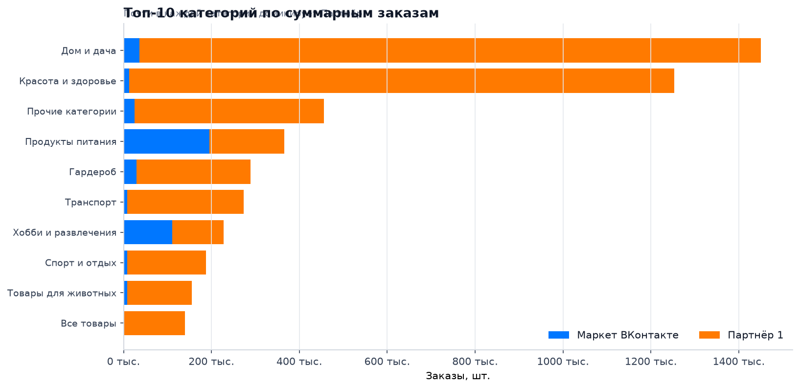
УвеличитьГоризонтальные стопки: синяя часть — заказы Маркета, оранжевая — Партнёра, длина — суммарные заказы категории. Визуально оранжевый доминирует везде, кроме «Продуктов питания» и «Хобби», где вклад Маркета заметен. В «Доме и даче» доля Маркета менее 3%, в «Красоте» — около 1%. Это ещё один разрез той же закономерности: Маркет удерживает лишь несколько ниш, Партнёр забирает массовый спрос.
График
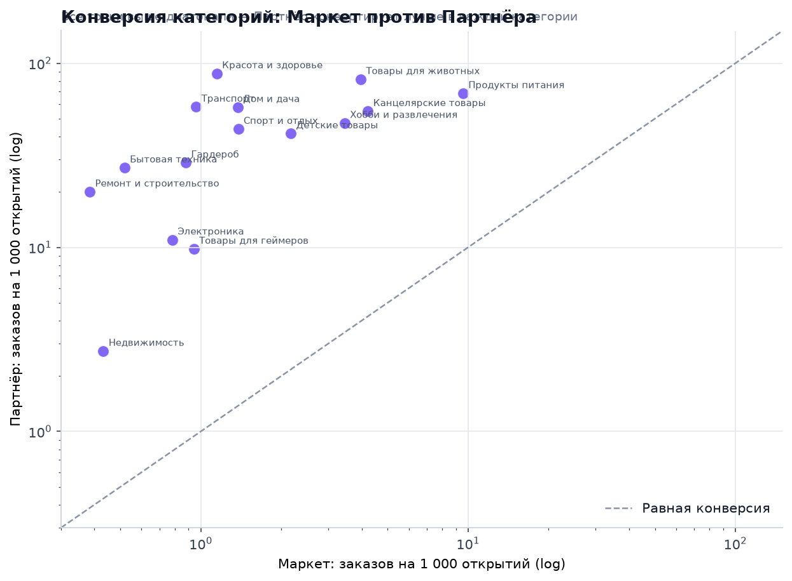
УвеличитьОси — конверсия в заказах на 1 000 открытий, обе логарифмические; пунктир — линия равной конверсии. Все 15 товарных категорий лежат выше диагонали — ни в одной Маркет не конвертирует лучше Партнёра. Ближе всего к диагонали «Недвижимость» (отношение 6,3) и «Продукты питания» (Маркет 9,6 против Партнёра 68,5; отношение 7,2); дальше всего «Красота и здоровье» (отношение 76,6). Это самое сильное доказательство того, что разрыв носит системный, а не категорийный характер.
15 сегментов: 2 пола × 7 возрастных групп, включая «н/д». Для каждого — покупатели и заказы в двух сегментах. Суммы по таблице совпадают с листом регионов (295 850 покупателей Маркета и 2 901 162 Партнёра), но меньше итоговых 296 148 и 2 901 334 — разница приходится на группы менее 100 человек, отсечённые при выгрузке.
Таблица
| Покупатели: Маркет Вконтакте | Покупатели: Партнёр 1 | |
|---|---|---|
| Пол | ||
| Женщины | 215,262 | 2,157,612 |
| Мужчины | 80,454 | 739,863 |
Из 15 строк оставлены 12: два пола × шесть возрастных групп. Строки «н/д» исключены из графиков, но их вклад мал (менее 0,1%). Женщины — 215 396 покупателей Маркета (72,8%) и 2 160 494 Партнёра (74,5%). Мужчины — 80 454 (27,2%) и 740 511 (25,5%). Гендерный баланс у сегментов почти одинаковый, а вот возрастной — сильно разный, и это следующий график.
График
Строки — возрастные группы, столбцы — пол, цвет и число — тысячи покупателей. Левая карта — Маркет, правая — Партнёр. У Маркета максимум — женщины 35–44 (66,3 тыс.), затем женщины 25–34 (54,6 тыс.) и 45–54 (37,8 тыс.). У Партнёра тот же лидер — женщины 35–44 (700,0 тыс.), но заметно выше группа 55+ (446,2 тыс. женщин). Мужчины 45–54 у Партнёра (186,3 тыс.) в 23 раза многочисленнее, чем у Маркета (8,0 тыс.). Аудитория Партнёра старше и шире; Маркет — моложе и уже.
График и таблица
| Маркет, % | Партнёр, % | |
|---|---|---|
| Возраст | ||
| до 18 | 2.1 | 0.7 |
| 18–24 | 16.4 | 5.1 |
| 25–34 | 27.7 | 16.7 |
| 35–44 | 29.3 | 33.0 |
| 45–54 | 15.5 | 24.4 |
| 55+ | 9.0 | 20.1 |
Сгруппированные столбцы: синий — Маркет, оранжевый — Партнёр, в тысячах покупателей. У Маркета пик — 35–44 (86,7 тыс.; 29,3%), затем 25–34 (82,0 тыс.; 27,7%) и 18–24 (48,5 тыс.; 16,4%). У Партнёра пик тоже 35–44 (955,0 тыс.; 33,0%), но дальше 55+ (582,3 тыс.; 20,1%) и 45–54 (707,1 тыс.; 24,4%). Доля 18–24 у Партнёра всего 5,1% против 16,4% у Маркета. Маркет привлекает молодёжь, Партнёр — платёжеспособную аудиторию 35+.
График
Классическая пирамида: слева мужчины (синий), справа женщины (оранжевый), по вертикали — возраст. Левая панель — Маркет, правая — Партнёр. У Маркета пирамида «молодая» и узкая: основная масса сосредоточена в 25–44, к 55+ резко сужается. У Партнёра — «зрелая» и широкая: 35–54 и 55+ сопоставимы по массе. Женщины доминируют в обеих моделях, но у Партнёра разрыв между полами меньше в старших группах.
График
Горизонтальные пары: для каждого пола и возраста — сколько заказов приходится на одного покупателя. У Маркета почти все сегменты в коридоре 1,3–1,7; у Партнёра — 1,4–1,7. Максимум у Партнёра — женщины 55+ (1,66); у Маркета выделяются мужчины до 18 (1,65, но на очень малой базе) и женщины 55+ (1,49). Разница невелика, но устойчива: Партнёр лучше удерживает и возвращает покупателя, что согласуется с долей повторных покупок 26,6% против 19,0%.
График
Две кольцевые диаграммы: слева Маркет, справа Партнёр; оранжевый — женщины, синий — мужчины. Женщины составляют 72,8% покупателей Маркета и 74,5% Партнёра. Разница 1,7 п.п. статистически незначима. Пол не различает сегменты — различает возраст и модель покупки. Это полезно для коммуникаций: гендерный таргетинг не даст прироста, возрастной — даст.
89 строк: 88 регионов и «Не указан». Суммы совпадают с демографией: 295 850 покупателей Маркета и 2 901 162 Партнёра. Главная особенность — 36,7% покупателей Партнёра не имеют региона (1 065 094 человека). Это ограничивает географический анализ, поэтому топ-регионы считаются без «Не указан», а его доля показывается отдельно.
График
Горизонтальные столбцы, тыс. покупателей. Лидеры: Москва 30,5 тыс., Санкт-Петербург 24,7 тыс., Челябинская область 20,5 тыс., Пермский край 13,4 тыс., Свердловская область 11,1 тыс. Топ-10 дают 47,2% всех покупателей Маркета. Распределение похоже на население, но с аномалиями: Челябинская и Пермская области выше своих долей населения, Московская область — ниже (5,9 тыс., 11-е место). Это может отражать как реальный спрос, так и особенности выгрузки.
График
Те же оси, оранжевые столбцы. Лидеры: Санкт-Петербург 155,5 тыс., Москва 146,4 тыс., Челябинская 67,9 тыс., Свердловская 61,1 тыс., Нижегородская 59,0 тыс. Топ-10 дают 40,5% известных покупателей. Структура заметно ровнее, чем у Маркета: нет столичной доминанты, сильны промышленные регионы Урала и Поволжья. Челябинская область снова третья — совпадение с Маркетом, которое сложно объяснить только населением.
График
Каждая точка — регион: по X покупатели Маркета, по Y Партнёра, обе оси логарифмические; пунктир — равенство. Почти все точки ниже диагонали: Партнёр крупнее в каждом регионе. Медианное отношение — 7,43. Ближе всего к паритету Чеченская Республика (1,81), Новгородская область (2,33) и Запорожская область (2,95); дальше всего — малые регионы, где Маркет почти не представлен. География повторяет общую закономерность: Маркет — нишевый канал, Партнёр — массовый.
График
Для топ-15 регионов Маркета — сколько заказов на покупателя в каждом сегменте. У Маркета разброс 1,32–1,50, у Партнёра 1,50–1,69. Межрегиональные различия малы по сравнению с межсегментными. Вывод: география почти не влияет на интенсивность покупок — влияет модель (Маркет vs Партнёр). Это упрощает планирование: не нужно строить отдельные стратегии под каждый регион, достаточно двух сегментных.
График
По X — регионы, отсортированные от малых к крупным (накопленная доля), по Y — накопленная доля покупателей. Прямая — полное равенство; чем ниже кривая, тем выше концентрация. Обе кривые сильно отклонены вниз: нижние 20% регионов дают лишь 1–2% покупателей, а основная масса сосредоточена в нескольких крупных. Коэффициент Джини — 0,579 у Маркета и 0,526 у Партнёра. Маркет сконцентрирован сильнее: он живёт в крупных городах, тогда как Партнёр глубже проникает в регионы.
График
Три группы регионов: топ-5, следующие пять, остальные 79; синий — Маркет, оранжевый — Партнёр. У Маркета топ-5 дают 33,8%, у Партнёра — 51,6%, но львиная доля этого — «Не указан» (36,7%). Если исключить неизвестные, концентрация Партнёра ниже. Сравнивать концентрацию корректно только по известным регионам: тогда Маркет концентрированнее, а Партнёр распределён ровнее. Это ещё одна иллюстрация того, как качество данных меняет вывод.
Таблица
| Регион | Покупатели: Маркет Вконтакте | Заказы: Маркет Вконтакте | Покупатели: Партнёр 1 | Заказы: Партнёр 1 | Заказов на покупателя VK | Заказов на покупателя PT | Доля VK, % |
|---|---|---|---|---|---|---|---|
| г. Москва | 30,488 | 42,652 | 146,366 | 229,256 | 1.400000 | 1.570000 | 16.050000 |
| г. Санкт-Петербург | 24,687 | 36,107 | 155,546 | 248,956 | 1.460000 | 1.600000 | 13.000000 |
| Челябинская область | 20,465 | 28,558 | 67,879 | 107,682 | 1.400000 | 1.590000 | 10.780000 |
| Пермский край | 13,366 | 19,489 | 54,523 | 85,703 | 1.460000 | 1.570000 | 7.040000 |
| Свердловская область | 11,117 | 15,626 | 61,132 | 93,602 | 1.410000 | 1.530000 | 5.850000 |
| Нижегородская область | 10,136 | 13,948 | 58,993 | 91,907 | 1.380000 | 1.560000 | 5.340000 |
| Самарская область | 9,627 | 13,214 | 50,590 | 77,845 | 1.370000 | 1.540000 | 5.070000 |
| Удмуртская Республика | 7,458 | 9,862 | 31,199 | 49,233 | 1.320000 | 1.580000 | 3.930000 |
| Республика Башкортостан | 6,205 | 8,330 | 42,619 | 64,042 | 1.340000 | 1.500000 | 3.270000 |
| Новгородская область | 6,021 | 9,033 | 14,036 | 22,170 | 1.500000 | 1.580000 | 3.170000 |
| Московская область | 5,905 | 8,134 | 58,653 | 90,511 | 1.380000 | 1.540000 | 3.110000 |
| Краснодарский край | 5,419 | 7,553 | 46,433 | 71,068 | 1.390000 | 1.530000 | 2.850000 |
| Республика Татарстан (Татарстан) | 5,331 | 7,327 | 42,061 | 63,049 | 1.370000 | 1.500000 | 2.810000 |
| Архангельская область | 5,161 | 7,172 | 33,264 | 56,232 | 1.390000 | 1.690000 | 2.720000 |
| Белгородская область | 4,928 | 6,647 | 21,485 | 33,624 | 1.350000 | 1.560000 | 2.590000 |
| Курская область | 4,776 | 6,816 | 17,171 | 27,388 | 1.430000 | 1.600000 | 2.510000 |
| Владимирская область | 4,754 | 6,908 | 19,394 | 30,176 | 1.450000 | 1.560000 | 2.500000 |
| Вологодская область | 4,733 | 6,503 | 36,051 | 59,299 | 1.370000 | 1.640000 | 2.490000 |
| Воронежская область | 4,719 | 6,392 | 34,752 | 54,011 | 1.350000 | 1.550000 | 2.480000 |
| Тюменская область | 4,617 | 6,409 | 28,414 | 44,718 | 1.390000 | 1.570000 | 2.430000 |
Топ-20 по покупателям Маркета с производными: заказы на покупателя в каждом сегменте и доля региона в покупателях Маркета. Таблица нужна для точечных решений: например, в Москве у Маркета 30,5 тыс. покупателей и 42,7 тыс. заказов (1,40 на покупателя), а в Санкт-Петербурге — 24,7 тыс. и 36,1 тыс. (1,46). Регионы с высокой интенсивностью — кандидаты на локальные промо.
До этого момента таблицы анализировались по отдельности. Теперь соберём всё вместе и ответим на главный вопрос кейса: какую роль играет Маркет ВКонтакте.
| Параметр | Маркет ВКонтакте | Партнёр 1 |
|---|---|---|
| Роль | Витрина, дискавери, верх воронки | Транзакционный слой, массовые продажи |
| Средний чек | 3 781 ₽ | 1 039 ₽ |
| CR открытие → заказ | 0,21% | 5,67% |
| Заказы за месяц | 413,7 тыс. | 4,93 млн |
| GMV за месяц | 1,56 млрд ₽ | 5,12 млрд ₽ |
| Покупатели | 296,1 тыс. | 2,90 млн |
| Повторные покупки | 19,0% | 26,6% |
| Главный канал | Витрина 39,1% + «Другое» 40,2% | Клипы 74,7% + лента 18,0% |
| Ядро аудитории | 18–44, моложе | 35–54 и 55+, старше |
| Экономика | Дорого и редко | Дёшево и часто |
Отношение показателя Маркета к показателю Партнёра: меньше единицы — Маркет отстаёт, больше — опережает. Логарифмическая шкала, чтобы 0,08 и 3,64 были видны на одном графике.
График
Горизонтальные столбцы — отношение показателя Маркета к Партнёру; пунктир на 1 — паритет; синие столбцы — отставание, оранжевые — преимущество. Маркет опережает только по двум показателям: средний чек (×3,64) и открытия карточки (×2,23). По показам он уже отстаёт (×0,83). Отставание катастрофическое в заказах (×0,08), покупателях (×0,10), конверсии (×0,04) и нажатиях (×0,16). Один график показывает: Маркет — машина внимания, Партнёр — машина сделок.
График
Оси: X — конверсия из открытия карточки в заказ (лог), Y — средний чек; размер круга — GMV. Маркет в левом верхнем углу: дорого и редко (3 781 ₽, 0,21%). Партнёр — в правом нижнем: дешево и часто (1 039 ₽, 5,67%). Это не конкуренты за одного покупателя, а два разных рынка: Маркет обслуживает редкие крупные покупки, Партнёр — повседневные. Отсюда стратегический вывод: не пытаться копировать Партнёра, а усиливать свою нишу и одновременно использовать партнёрский слой для массового спроса.
График
Пять блоков и стрелки — поток пользователя. Слева контент сообществ (посты, клипы, рефералы) создаёт 86,3 млн открытий. Он ведёт в витрину и карточку Маркета (193,5 млн открытий). Дальше поток расходится: в собственный чекаут Маркета (413,7 тыс. заказов со средним чеком 3 781 ₽) и в Партнёра (4,93 млн заказов со средним чеком 1 039 ₽). Пунктирная стрелка — прямые переходы к Партнёру без открытия карточки (106,9 млн). Оба потока сходятся к покупателю (3,2 млн человек). Схема фиксирует главное: Маркет — верхняя часть воронки и точка распределения, а не конечный магазин.
Таблица
| Роль | Доказательство из данных | Что это означает |
|---|---|---|
| 1. Витрина и discovery | 45,5% показов, 69,0% открытий карточки; 66,6 млн видящих товары | Создаёт спрос и показывает товар внутри соцграфа |
| 2. Контент-драйвер | 86,3 млн открытий из постов и клипов, 82,3 млн — реферальные (95,4%) | Превращает авторский контент в переход в карточку |
| 3. Инфраструктура для SMB | 9 754 сообщества, 5 737 с чекаутом, 3 961 с активным каталогом | Даёт малому бизнесу витрину и инструменты без своего сайта |
| 4. Нишевый маркетплейс высокого чека | 3 781 ₽ средний чек (×3,64 к Партнёру), 1,56 млрд ₽ GMV | Обслуживает редкие дорогие покупки, а не повседневный спрос |
| 5. Трафиковый шлюз для Партнёра | 5,73 млрд показов, 4,93 млн заказов, 5,12 млрд ₽ GMV, 106,9 млн прямых переходов | Монетизирует массовый спрос через партнёрский маркетплейс |
| 6. Рекламно-медийный слой | 92,4 млн ₽ рекламных трат в выборке, 542 рекламодателя | Продаёт доступ к аудитории и результаты, а не только показы |
Шесть ролей, каждая подтверждена конкретными числами из датасета. Матрица отвечает на вопрос кейса не декларацией, а Evidence-based: «роль» → «чем доказано» → «что означает для стратегии». Роли не исключают друг друга: платформа одновременно является витриной, контентным драйвером, инфраструктурой для малого бизнеса, нишевым маркетплейсом, шлюзом для партнёра и рекламным слоем. Вместе они описывают социальную коммерцию как отдельную модель, отличную от классического маркетплейса.
Короткий ответ. Маркет ВКонтакте — это не «ещё один маркетплейс», а слой социальной коммерции внутри социальной сети: инфраструктура, которая превращает внимание к контенту в интерес к товару и распределяет этот интерес между собственным чекаутом и внешним партнёрским маркетплейсом.
Развёрнутый ответ — пять тезисов, каждый с доказательством.
Маркет владеет верхом воронки, но не низом. 45,5% показов и 69,0% открытий карточки — за Маркетом; 92,3% заказов и 76,6% GMV — за Партнёром. Точка перелома — нажатие на кнопку: 14,0% против 86,0%. Значит, Маркет решает задачу обнаружения и интереса, а сделку отдаёт тому, кому доверяют.
Маркет — это дистрибуция контента, а не каталог. 95,4% открытий из постов и клипов — реферальные; у Партнёра 74,7% всех открытий приходят из клипов. Витрина магазина у Партнёра даёт лишь 0,8%. Вывод: ценность платформы — социальный граф и авторы, а не полка товаров. Именно поэтому ВКонтакте строит социальную коммерцию вокруг авторов, а не вокруг склада.
Маркет — инфраструктура для малого бизнеса, но с низкой активацией. 9 754 сообщества, 40,6% имеют активный каталог, 58,8% подключили чекаут, но только 3,1% получили хотя бы один заказ. Инструменты есть у многих, результат — у единиц. Роль платформы — снижать порог входа, а узкое место — не подключение, а спрос и умение его привести.
Маркет — нишевый маркетплейс высокого чека. Средний чек 3 781 ₽ в 3,64 раза выше партнёрского, но заказов в 11,9 раза меньше. Конверсия из открытия в заказ — 0,21% против 5,67%. Это осознанная позиция: дорогие редкие покупки (техника, мебель, крупные товары), где пользователь готов изучать карточку, но не готов платить внутри соцсети.
Маркет — трафиковый и рекламный шлюз экосистемы. 5,73 млрд показов, 4,93 млн заказов и 5,12 млрд ₽ GMV Партнёра — это монетизация того же трафика ВКонтакте. Плюс 106,9 млн прямых переходов без открытия карточки. Роль Маркета здесь — быть входом в e-commerce, даже если покупка происходит у партнёра.
Формула роли. Маркет ВКонтакте = внимание (охват и контент) × интерес (карточка и витрина) × распределение (свой чекаут или партнёр). Платформа зарабатывает не только на своём обороте, но и на том, что направляет спрос туда, где он с большей вероятностью превратится в сделку.
| Уровень | Наблюдение | Действие |
|---|---|---|
| Продукт | CR открытие → заказ 0,21% | Упростить чекаут, показать доставку и возврат, добавить оплату при получении |
| Ассортимент | «Гардероб» — 33 млн открытий, 29 тыс. заказов | Разобраться с размерной сеткой, фото, ценой; это крупнейший нереализованный спрос |
| Трафик | 74,7% Партнёра — клипы | Диверсифицировать каналы, иначе алгоритм клипов = единая точка отказа |
| Продавцы | 3 961 с каталогом, 298 с заказами | Программа активации: трафик, обучение, промо-слоты для «спящих» |
| Удержание | 19,0% повторных против 26,6% | CRM-механики, подписки, персональные подборки |
| Данные | 36,7% регионов Партнёра — «Не указан» | Починить передачу геоданных: без этого нельзя считать локальный спрос |
Легенда к таблице действий. Слева — уровень решения, в центре — наблюдение из данных, справа — конкретное действие. Таблица переводит аналитику в план: каждое действие привязано к измеримому разрыву. Приоритет — первые две строки: конверсия и «Гардероб», потому что там сосредоточен наибольший нереализованный потенциал.
| Гипотеза | Проверка | Вердикт |
|---|---|---|
| «Маркет — маленький, но растущий» | Внутри месяца DAU стабилен, тренда нет; растёт Партнёр | Опровергнуто: Маркет стабилен, не растёт |
| «Маркет проигрывает из-за охвата» | Показы сопоставимы (4,8 против 5,7 млрд) | Опровергнуто: проблема не в охвате |
| «Маркет проигрывает из-за конверсии» | 0,21% против 5,67% на выходе из карточки | Подтверждено |
| «Клипы — главный драйвер» | 74,7% открытий Партнёра, 8,9% у Маркета | Подтверждено для Партнёра, не для Маркета |
| «Больше подписчиков — больше продаж» | ρ ≈ 0,2; у лидеров бывает малая аудитория | Опровергнуто |
| «Молодая аудитория — драйвер» | 18–24: 16,4% у Маркета, 5,1% у Партнёра | Частично: молодёжь у Маркета, деньги у Партнёра |
Легенда к таблице гипотез. Каждая строка — проверяемая гипотеза, способ проверки и вердикт. Такой формат защищает от «красивых» выводов: например, распространённое мнение «нужно больше охвата» данные не поддерживают — охват уже есть, а конверсии нет.
Легенда к ограничениям. Список фиксирует, где заканчивается достоверность. Ключевое: выводы о структуре и различиях (Маркет vs Партнёр) устойчивы, потому что подтверждаются несколькими независимыми листами. Выводы об абсолютных уровнях (сколько всего продавцов, каков рынок) — ограничены выборкой и одним месяцем.
analytics.ipynb.Зависимости: pandas, numpy, matplotlib, seaborn, openpyxl. Специальных библиотек для визуализации не требуется.
| Метрика | Формула | Смысл |
|---|---|---|
| Показы | из источника | сколько раз товар показан |
| Открытия карточки | из источника | сколько раз открыта карточка товара |
| CR показ → открытие | открытия / показы | привлекательность карточки в ленте |
| CR открытие → заказ | заказы / открытия | способность карточки продавать |
| CR показ → заказ | заказы / показы | сквозная эффективность |
| Средний чек (AOV) | GMV / заказы | средняя стоимость заказа |
| GMV на покупателя | GMV / покупатели | ценность покупателя за период |
| Заказов на покупателя | заказы / покупатели | интенсивность покупок |
| Доля повторных | из источника | удержание |
| ER | (лайки + репосты) / просмотры | вовлечённость контента |
| Доля Маркета | VK / (VK + Партнёр) | вклад сегмента в показатель |
Легенда к словарю. Таблица нужна, чтобы любой читатель мог пересчитать метрику самостоятельно. Все производные показатели в ноутбуке считаются по этим формулам из абсолютных значений, а не берутся из округлённых ячеек.
Маркет ВКонтакте в этом датасете — не магазин, а слой социальной коммерции. Он превращает контент и социальный граф в интерес к товару, удерживает верх воронки (45,5% показов, 69,0% открытий) и распределяет спрос между собственным нишевым чекаутом высокого чека и массовым партнёрским маркетплейсом. Его сильные стороны — охват, контентная дистрибуция и инфраструктура для малого бизнеса. Его слабые места — конверсия из карточки в заказ (0,21%), удержание (19,0% повторных) и зависимость от одного партнёра, который забирает 92,3% заказов и 76,6% GMV. Рост платформы в сентябре 2026 обеспечивал не Маркет, а Партнёр — и это главный стратегический сигнал датасета.